本书讲的是一套特殊的系统：DeepSeek 的生产推理引擎 DeepInfer。
当大多数开源推理框架（如 vLLM、SGLang、TensorRT-LLM）致力于兼容数百个开源模型、支持十几种不同硬件加速卡、提供标准化的 OpenAI 在线 API 服务时，DeepInfer 走了一条截然不同的道路。它是 DeepSeek 专为单一生产模型（DeepSeek-V4.1-Flash）、在特定的超大规模物理集群切分（Prefill 采用 8 卡小并行、Decode 采用 64–128 卡宽专家并行、外置独立 3FS 存储集群保留数日 KV cache）下，将单个 token 的边际服务成本压低到极限而打造的专用生产引擎。
这种“一模型、一架构、一目标”的极端特化，使得 DeepInfer 具备了传统通用框架难以企及的特性。它的几乎每一个机制——从双硬件算子分发、C++ 异步批调度，到 FP4/MXFP4 激进量化、基于 CED 架构的 128 token 有界重放、结合置信度的 DSpark 动态投机验证——都是将模型数学结构与硬件访存和通信瓶颈强行对齐的产物。
本书面向有软件工程或人工智能工程背景的读者。我们假设你熟悉 Python，了解 Transformer、注意力机制（Attention）和混合专家模型（MoE）的基本概念，可能使用过 vLLM 等工具部署过模型，但没有深入研读过现代生产级分布式推理引擎的底层源码。
你不需要被通俗读物式的玩笑哄着阅读，但你需要清晰的指路牌。在深入细节之前，我们会在第 1 章为你打牢连续批处理、P/D 分离、专家并行和 KV cache 压缩等系统概念。
全书共有五大部分，你可以根据自己的需求选择阅读路径：
本书的所有源码分析、函数行号与测试文件，均基于 DeepSeek 于 2026 年 10
月开源的固定代码基线： - DeepInfer：Commit
9bd9cf243fc53ef9afbf8f04d391d989117d6ab9 -
deepseek-recipe：Commit
935817c66f5d6e64838f419692545f06787e485f（v0.2.0） -
vLLM（对照组）：Commit
2d40c0609fd672e845ddfef0324ab6d8dd616af4 -
SGLang（对照组）：Commit
79eb10e182c62af6564e5d8aa2b62e19810b6cc2
为了维护技术的严肃性，全书严格执行五级证据规范： - A
级（代码证实）：源码中白纸黑字可见，书中附带明确的文件路径与行号（例如
deepinfer/worker/cache_engine.py:327）。 - B
级（官方文档）：DeepSeek 官方
README、inference_deployment_qa.md、官方知乎文章或 Hugging
Face 权重卡明确声明的事实。 - C
级（第三方实测）：具有明确硬件配置与可复现方法的第三方测试。 -
D
级（社区讨论）：社区观点与新闻报道，书中仅作为背景或舆论参考，不作为事实依据。
- E
级（本书推断）：由代码与物理规律推导得出的结论，书中均会明确注明“从……推断，但资料未直接说明”。
读者尤其需要牢记一条底线：全书始终严格区分代码里开源的与文档里描述但未开源的。看清这两者的边界，是真正读懂 DeepInfer 的第一步。
把一个大语言模型在本地单卡上用 Hugging Face 跑通，只需要十几行 Python 代码；但要把同一个模型部署到数据中心，支撑每天上百亿甚至上百万亿 token 的高并发访问，中间隔着一道巨大的系统工程鸿沟。本章是全书的技术底座：我们将拆解大模型推理在物理硬件上的真实瓶颈，建立 Prefill、Decode、KV Cache、连续批处理与专家并行的基础认知，为理解 DeepInfer 的特化设计做好准备。
大模型在处理一次用户请求时，内部并非一成不变的计算，而是严格分为两个特征完全不同的阶段：预填充（Prefill）阶段与解码（Decode）阶段。
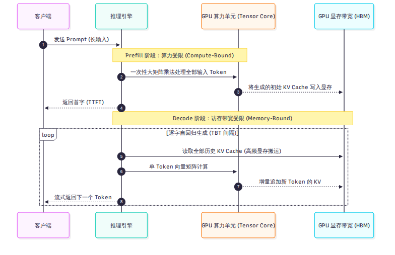
当用户发送一段包含 2,000 个字的长提示词（Prompt）时，模型在第一个计算步需要将这 2,000 个 token 同时送入神经网络。此时，注意力机制中的 Query、Key、Value 矩阵乘法以及多层感知机（MLP）的运算，面对的是一个巨大的输入矩阵。
这种大矩阵乘法的计算密度（FLOPs per Byte）极高，现代 GPU 上的张量计算核心（Tensor Core）能够被充分打满。这个阶段的核心瓶颈是 GPU 的浮点计算能力（Compute-Bound）。用户从按下回车到屏幕上冒出第一个字所经历的等待时间，称为首字延迟（Time to First Token，TTFT），它主要由 Prefill 阶段的计算速度决定。
一旦 Prefill 结束，模型就进入了自回归（Autoregressive）生成阶段：每一步只能根据前文所有 token，预测并输出下一个单一 token。
在 Decode 阶段，输入矩阵退化成了单行向量。但为了计算这一个 token 与历史所有上下文的注意力关联，GPU 必须在每一个计算步，把模型的所有权重参数以及前文积累下来的全部历史中间键值状态，从显存（HBM）中完整搬运到片上缓存（SRAM）一次。
此时，计算单元在短短几十微秒内就完成了向量乘法，绝大部分时间都在干等显存总线把海量数据搬过来。这个阶段的核心瓶颈是 GPU 的显存访问带宽（Memory-Bound）。用户看到屏幕上的文字逐个蹦出的间隔时间，称为字间延迟（Time Between Tokens，TBT）。
将这两种物理瓶颈迥异的计算强行混在同一张 GPU 上运行，会导致 Prefill 的大算力冲击严重拖慢 Decode 的流式响应。这也正是现代顶级生产系统（如 DeepSeek 在第 4 章中展示的架构）坚决推行计算集群物理分离的根本原因。
在自回归生成过程中，历史 token 的 Key 和 Value 向量如果在后续计算中反复全量重算，计算量将随序列长度呈二次方爆炸。为了避免重算，推理引擎会将每一步产生的历史 Key 和 Value 缓存在显存中，这就是 KV Cache。
KV Cache 极大地节省了计算量，但代价是消耗了惊人的显存空间。以一个标准架构的大模型为例，单序列单 token 的 KV Cache 显存占用公式为：
在一个未经过度压缩的标准 70B 模型中，每个 token 的 KV 往往占用数千字节。当上下文长度达到 32K 或 128K 时，单条长连接请求所霸占的 KV Cache 显存就会高达几十吉字节（GB），甚至超过了模型权重本身的体积。
这就引出了一个残酷的工程现实：决定一个推理节点能同时承载多少并发请求（Batch Size）的，往往不是 GPU 算力够不够，而是显存里的 KV Cache 会不会爆。 显存一旦耗尽，系统就必须拒绝新请求或将正在生成的任务强行踢出。如何压缩 KV Cache 体积、如何在显存中高效存放它们，直接决定了推理系统的服务成本。
为了摊薄模型的权重访存开销，推理引擎必须把多个用户的请求打包成一个批次（Batch）并发执行。
在早期的深度学习服务中，系统采用静态批处理（Static Batching）：等待多个请求凑齐后一起启动。由于不同请求的输出长度差异巨大，有的请求生成 10 个 token 就结束了，而有的请求需要生成 500 个 token。短请求结束后，它所占用的显存槽位只能空转填充 Padding，直到批次中最长的请求跑完才能整体释放。这在 GPU 算力时间线上留下了大面积的空闲气泡。
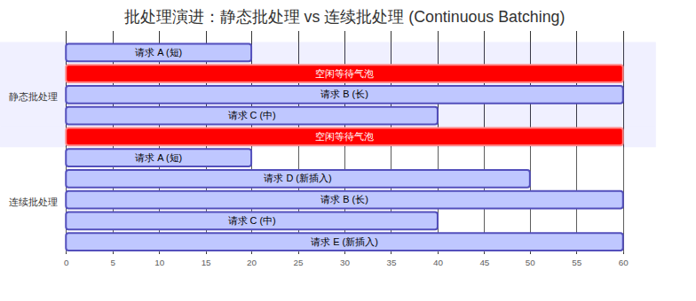
现代推理框架（以 Orca 和 vLLM 为代表）普遍引入了连续批处理（Continuous Batching，或称迭代级调度）。它的核心思想是打破请求间的强行捆绑，调度器以单步迭代为粒度进行管理：每走一步前向计算，一旦某个请求生成了结束标记（EOS），调度器立刻将其移出批次并释放资源，同时从等待队列中拉入新的 Prefill 或 Decode 请求填补空位。连续批处理彻底消除了静态批处理的尾部气泡，使 GPU 吞吐量获得了成倍的飞跃。
面对千亿参数的大模型，单张显卡无论在算力还是显存上都已无法独立支撑，推理引擎演化出了三项核心技术支柱：
自回归 Decode 每步跑一遍大模型只吐出一个 token，显存带宽极度浪费。投机解码的核心思想是：用一个小巧轻量、耗时极短的“草稿模型”一口气猜测未来几个 token（例如猜 5 个），再让庞大精准的主模型在单步前向中同时验证这 5 个候选词。只要猜对了一部分，系统就能在单次大模型前向中产出多个 token，从而成倍缩短生成时间。
标准的 PyTorch 算子组合在底层会触发频繁的显存读写中间缓冲。通过使用 Triton、C++、CUDA 或新兴的 TileLang，工程师将多步计算（如注意力计算、激活函数、量化转换）直接融合到 GPU 内部片上 SRAM 中一次性完成（例如 FlashAttention、FlashMLA、DeepGEMM），从而将硬件执行效率推向物理极限。
理解了这些通用规则后，我们便能看清：DeepInfer 究竟是如何在这个竞技场上，针对一个具体模型打出一套极其罕见的“特化组合拳”的。下一章，我们将正式揭开 DeepInfer 的神秘面纱。
2026 年 10 月，DeepSeek 正式开源了其声称在生产环境中运行的核心推理引擎 DeepInfer。伴随开源发布，技术社区掀起了一阵热潮，甚至出现了“可直接替代 vLLM”、“一键搭建私有化 DeepSeek 满血服务”等广泛误读。本章的目标是拨开迷雾，用白纸黑字的代码和官方文档事实，准确厘清 DeepInfer 的开源边界、硬件门槛、真实定位以及它所解决的核心问题。
在 GitHub 仓库 deepseek-ai/DeepInfer（基于初始提交
d585e65 至当前锁定版本
9bd9cf2）的根目录下，DeepSeek 采用了标准的开源协议（MIT
License）。然而，开源一份代码并不等于开源了整个生产服务体系。
读者必须看清：DeepInfer 只是 DeepSeek 线上推理庞大架构中的“单节点执行引擎”部分，而且仅仅提供了离线批处理推理接口。
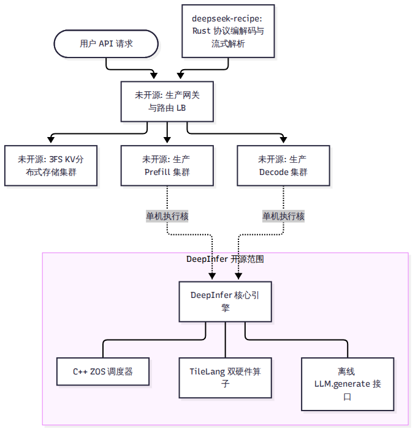
为了避免将未开源的功能误当成已有代码，我们将 DeepSeek 官方 Q&A 文档所披露的完整体系拆解为两个清晰的阵营：
| 分类 | 包含的组件与特性 | 开源状态 | 证据等级 |
|---|---|---|---|
| 开源包含的内容 | 离线推理主类 LLM.generate、C++ ZOS 异步调度器、基于
TileLang 的双硬件镜像算子、针对 V4.1-Flash 的模型前向实现、MTP
变长投机解码、批不变与确定性采样 |
已开源（在当前仓库源码中） | A 级（代码证实） |
| 未开源的内容 | 外置分布式 3FS KV Cache 存储集群、VE/Prefill/Decode 跨节点物理分离编排调度、集群级四级动态负载均衡器、OpenAI 兼容在线 HTTP/gRPC 服务接口、分布式容错与健康检查 | 未开源（仅在官方文档中有描述） | B 级（官方文档） |
换句话说，如果你克隆了 DeepInfer
仓库，你得到的是一台经过极端调校的“发动机核心”，而不是一辆挂上挡位就能直接载客上路的“整车”。代码中甚至没有包含任何基于
FastAPI 或 aiohttp 的在线监听端口，唯一的对外暴露接口是
deepinfer.entrypoints.llm.LLM 的离线生成函数。
如果你尝试将 LLaMA-3、Qwen-2.5 或 Mistral 模型权重塞给 DeepInfer，或者试图在一台配备 NVIDIA A100、H100 乃至消费级 RTX 4090 的服务器上运行它，程序会在启动的第一秒毫不留情地崩溃报错。
DeepInfer 从设计之初就不是通用框架。它的调度逻辑、显存槽位、注意力掩码与并行通信，全部围绕 DeepSeek-V4.1-Flash 单一模型的数学结构展开。代码内部硬编码了该模型的注意力滑动窗口（128）、压缩比率分界（第 20 层）、专家数量（384+1）以及草稿验证块长。它放弃了对其他任何开源模型的兼容可能。
在硬件加速器方面，DeepInfer 只面向两款顶级计算平台构建： - 英伟达 Blackwell 架构（SM100，如 B200 / GB200） - 华为昇腾 Ascend 950 系列 NPU
这一限制不仅体现在算子库的汇编实现中，甚至直接被写入了引擎初始化的断言门禁。在
deepinfer/engine/llm_engine.py 的初始化流程中，引擎调用
get_bf16_tflops_limit() 检测当前硬件算力峰值（分别对应
2250、2500 与 432 TFLOPS 档位）。如果在非 SM100 的英伟达显卡（例如
Hopper SM90 或 Ampere SM80）上运行，引擎会在构建统计记录器时直接抛出
RuntimeError: unknown GPU type 异常强行退出。
这种苛刻性正是其“专用引擎”特性的直接体现：为了追求极致性能，它在代码最底层直接调用了 Blackwell 的 TMA（张量内存加速器）与昇腾专有的统一缓冲区（UB）特性，彻底斩断了跨代通用兼容的妥协。
既然运行门槛如此严苛、功能如此特化，DeepSeek 为什么要在此时开源 DeepInfer？
在 2025 年 4 月关于推理基础设施的一份公开技术说明（open-infra-index）中，DeepSeek 曾客观评估其内部推理栈对于外部开发者而言“在没有重大改造的前提下进行公开部署是不切实际的（impractical for public deployment）”，因此当时选择优先向上游 vLLM 贡献底层组件。
这一表述在后来的部分二传报道中被过度解读为“DeepSeek 认为开源推理引擎不现实”。事实是，2026 年 10 月 20 日，DeepSeek 在其官方 X 平台（原 Twitter）发布正式公告，给出了开源该栈的官方动机原文：
“We’re sharing our production stack to help the community lower compute costs, reduce energy use, and make AI more affordable.” （我们分享我们的生产技术栈，旨在帮助社区降低计算成本、减少能源消耗，并让 AI 变得更加普惠可及。）
在官方文档与知乎披露中，DeepSeek 给出了支撑其线上服务规模的关键运营指标： - 日服务吞吐量：每天处理并输出超过 155 万亿（155 Trillion）token。 - 单卡经济效益：在公布的谷时定价模型折算下，实现了每 GPU 小时 38 美元的理论营收产出。
我们必须客观指出：这些数字带有极度严苛的前提条件——它建立在全系统 100% 打满、极高前缀缓存命中率、全球超节点互联以及谷时电价精细化调度的工业大集群之上，绝不能简单脱离上下文推导为普通小规模机房的常态收益。
在开源 DeepInfer 的同时，DeepSeek 在独立仓库中同步开源了
deepseek-recipe（Commit
935817c，v0.2.0）。这是一个用 Rust 语言编写、并通过 PyO3
提供 Python 原生绑定的轻量级高性能前置库。
在真实的生产服务中，模型推理并不是直接接收纯文本： 1.
防止特殊 Token 注入攻击：恶意用户可能在输入中伪造
<|im_end|>
或特殊的指令控制符，诱导模型发生逻辑越狱。deepseek-recipe
通过剥离词表中的敏感附加区间（added
vocabulary），在分词阶段强制清洗，确保输入安全。 2.
多协议快速编解码：支持 OpenAI 的 Messages、Chat
Completions 以及 Anthropic 的 Responses 等多种上层协议，利用 Rust
的多线程并行能力，将长 Prompt 拆解分段并行编码，极大压低了 CPU
端的分词延迟。 3. 流式增量解析状态机：在模型吐出 token
时，如何精准识别思考标记（如 <think> 与
</think>）并实时剥离？deepseek-recipe
内置了基于 KMP 算法的 11
状态流式状态机，以逐字节级别实时解析流式输出，确保客户端平滑获得干净的思考流与最终回复。
在深入探究引擎如何运转之前，我们必须先彻底搞清楚它所服务的核心对象。下一章，我们将深入剖析 DeepSeek-V4.1-Flash 这个拥有 763B 参数的庞大模型究竟长什么样。
要理解 DeepInfer 为什么要把代码写成今天这副摸样，唯一的办法是先看懂它服务的对象。DeepInfer 的每一处显存管理、每一个算子分发、每一行调度逻辑，都是为了迁就 DeepSeek-V4.1-Flash 的数学与张量结构。如果脱离了这个模型，DeepInfer 的代码将失去绝大部分意义。本章将深入剖析 V4.1-Flash 的全局参数拓扑、多级注意力机制、CED 骨干分层、mHC 超连接以及 890 字节 KV 的精确来源。
DeepSeek-V4.1-Flash 不是一个常规意义上的稠密（Dense）模型，而是一个超高稀疏度的混合专家模型（MoE）。
依据本地对 Hugging Face 发布的 48 个 safetensors
权重切片头部的逐 Tensor 遍历求和（A 级与 B 级证据，与
safetensors.total = 763,205,315,794
完全一致），模型的真实参数构成如下：
| 模块分类 | 参数量 | 存储精度与打包格式 | 占总参数比例 |
|---|---|---|---|
| 路由专家（Routed Experts） | 543.6B | FP4（UE8M0 Scale，每 32 元素对齐打包） | 71.2% |
| Engram 嵌入表（两层静态表） | 196.9B | FP8（E4M3 格式） | 25.8% |
| DFlash 草稿层（MTP 3 层） | 14.2B | BF16 / FP8 混合 | 1.9% |
| 注意力投影（MLA 矩阵） | 5.1B | BF16 | 0.7% |
| 共享专家（Shared Experts） | 1.4B | BF16 | 0.2% |
| 词嵌入与输出头（Embed & LM Head） | 1.32B | BF16（各 0.66B，词表大小 129,280） | 0.2% |
| 视觉编码器（ViT）与对齐投影 | 0.48B | BF16（ViT 0.41B + MLP 投影 0.073B） | <0.1% |
| 全局总参数（Total Parameters） | 763.2B | 全模型静态权重占用显存 510.3 GB | 100% |
尽管参数总量高达 7632 亿，但模型在处理任意单个 token 时，激活参数量仅约为 16.4B（包含词表计算；若剔除首尾 Embedding/LM Head，仅为 15.1B）。
全模型共包含 40 个隐藏层，所有 40 层皆为 MoE 结构，没有任何 Dense 前缀层。每一层包含 384 个路由专家与 1 个共享专家，每个 token 仅激活其中 6 个路由专家。单层激活参数仅为 377.3M（注意力 126.6M + 6 个路由专家 212.4M + 共享专家 35.4M）。这种高稀疏度意味着：系统必须在分布式切分中极度压低专家权重加载的访存代价，否则 763B 的总权重会彻底堵死显存总线。
在标准的 Multi-Head Attention（MHA）或 Grouped-Query Attention（GQA）中，上下文长度达到 1M token 时，KV Cache 的体积足以撑爆几台机器的显存。V4.1-Flash 采用了一整套复合的压缩与稀疏机制。
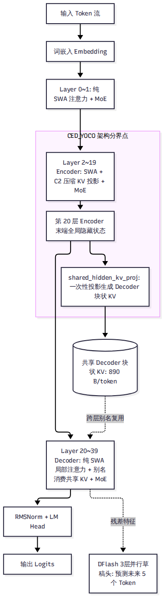
模型使用 64 个 Query 头对准一条 512 维的共享潜在向量（Latent Vector），KV 头数仅为 1。在投影维度上，包含 448 维非旋转向量（Nope）与 64 维位置编码向量（RoPE），RoPE 仅打在末尾 64 维上。这种设计使 KV 的理论维度直接降低了一个数量级。
在
deepinfer/model_executor/models/v4_modules/index_attn.py
中，模型配备了 32 头、每头 128 维的 Indexer
模块。在计算全量注意力前，Indexer 通过公式
对历史 Token 进行粗筛。在第 20 层首先粗选出 2,048 个 8-token 块（共
16,384 token），后续 21–39 层在候选集合内精确挑选前 512 个 token
参与完整注意力计算。
第三方常提到的“每 token 约 890 字节”并非估计值，而是可以在源码中严格复算的数学定值。
在 deepinfer/worker/cache_engine.py:327-332 中，块状 KV
的存储结构由两部分组成： - 主注意力 KV（Main KV）：采用
FP4 量化（E2M1 尾数 + E4M3 尺度，每 16 个元素共享一个 Scale），每压缩
token 占用 288 字节。 - 索引器 K（Indexer K）：采用
MXFP4 量化（E2M1 尾数 + UE8M0 尺度，每 32 个元素共享一个 Scale），每压缩
token 占用 68 字节。
更关键的是：块状 KV 并不是由全部 40 层分别生成的，全模型只有
4 个源层会产生块状 KV！根据
deepinfer/hugging_face/config.py 中的
kv_source_layer_ids = [2, 8, 14, 20]： - 第 2、8、14 层为
C2 压缩层（压缩比 ratio = 2，相邻 2 个 token 做加权平均生成 1 个压缩
token）。 - 第 20 层为 C1 压缩层（压缩比 ratio = 1，保持恒等）。
因此，单序列平均到每个输入 token 上的块状 KV 体积精确为：
在 1M 上下文下，单请求的块状 KV 仅需 890 MiB 显存，这彻底扫清了长上下文在跨节点传输与持久化存储上的容量障碍。
除了块状 KV，模型还在所有 40 层全部采用了滑动窗口注意力（Sliding
Window Attention，SWA），窗口长度固定为 128。在
cache_engine.py 中，SWA KV 采用 MXFP8 格式（528
字节/token/层）。
一个极其重要的代码事实是：V4.1-Flash
全模型没有任何一层全量注意力层！ 在 attn.py
中，_is_full 恒等于
False。如果调度器试图对某一层请求 Full
Attention，KVCacheManager
会直接抛出异常。全模型在宏观上依赖前 20 层的隐状态传递与后 20 层的局部
SWA 注意力相配合。
在代码中，V4.1-Flash 的 40 个层被赋予了独特的角色划分，这在内部被称为 CED（Compress-Encoder-Decoder）或 YOCO 结构。
通过检查
deepinfer/hugging_face/config.py:158-161，分界并不是一个独立的配置字段，而是从压缩比列表
compress_ratios 中推导得出的： - 前 20 层（Layer
0~19，Encoder 侧）：Layer 0~1 为纯 SWA 局部层，Layer 2~19 包含
C2 压缩注意力。 - 后 20 层（Layer 20~39，Decoder
侧）：压缩比全为 1。
需要特别说明的是，在代码实现中，Encoder 与 Decoder
并不是两个不同的 Python 类。全模型 40 层由同一个
DeepseekDecoderLayer
统一驱动，仅仅通过传入的层号与拓扑配置表现出不同的计算行为。
YOCO 架构最精妙的工程设计在于：后 20 层的块状 KV 并不是逐层计算出来的，而是直接继承自第 20 层！
在
deepinfer/model_executor/models/v4_modules/attn.py:345-353
中，第 20 层的注意力权重矩阵包含一个特殊的独立投影算子
shared_hidden_kv_proj。当输入张量经过前 20 层 Encoder
计算、到达第 20 层入口时，其末端隐藏状态直接被该算子投影出一份全量块状
KV。后续第 21 到 39 层在模型前向时，根本不持有独立的 KV
投影权重，而是通过 cache_engine.py 中的
layer_kv_map 直接以别名方式共享这份 KV。
这一机制是第 8 章“SWA 有界重放能够让 Prefill 计算量减半”的核心前提：既然 Decoder 层的块状 KV 在第 20 层就已经由全局隐藏状态一次性搞定了，后 20 层在 Prefill 阶段自然就没有必要再对历史前文做昂贵的全量前向计算。
除了主干注意力与专家网络，V4.1-Flash 还嵌入了两项特殊的先锋结构：
在 v4_modules/hc.py 与 mhc_ops.py
中，传统的单通道残差流被扩展为包含 4 个子流的四维通道（张量形状为
[batch, 4, 5120]）。在每一个 Transformer 子层前后，模型通过
24×20480 的单精度（fp32）GEMM 矩阵与 20 次 Sinkhorn 归一化迭代，将 4
个残差子流进行充分混洗。
这种设计大幅提升了深度网络的梯度流转能力，但在推理工程上也带来了沉重代价：它打破了现代推理引擎普遍依赖的标准“残差相加与 RMSNorm 融合算子”（Fused Add-RMSNorm），使得引擎必须为 mHC 手写专用的片上混洗 Kernel。
在 v4_modules/engram.py 中，模型在第 1 层和第 14
层分别挂载了巨大的静态 N-gram 查找表。Engram 拥有 3 张独立的 N-gram
表，采用 8 个头部与多哈希桶设计，总参数量高达 196.9B（占全模型权重的
25.8%），在 FP8 格式下单层表体积即达 786 GB。
Engram 的作用是绕过注意力计算，直接通过静态多 Token
哈希查找提取局部的固定词组搭配语义。但它在 Decode
阶段带来了一个棘手问题：当 ZOS 异步调度开启时，N-gram
的滑动查找窗口横跨了 CPU 刚提交的未解压数据与 GPU
显存中的环形缓冲区，这逼迫 DeepInfer 必须为其编写专用的
gather_engram_tokens_zos 算子来跨存储收集上下文。
投机解码所需要的草稿 Token 由内置的 DFlash 模块生成（定义于
models/mtp/dflash.py）。它由挂载在主干顶部的 3
个独立草稿层（层号 40、41、42）组成，参数量为 14.2B。
DFlash 的核心特点是：它并不是自回归地串行猜测 5 次，而是对未来 5
个位置的输入块执行一次性、非因果的并行前向。在第 42
层末端，模型设计了专门的置信度头
ConfidenceHead（mtp.2.confidence_head.proj.weight，形状为
[1, 5376]），用于预测每个草稿 token
能够被主模型接纳的概率，为第 10 章的 DSpark 变长验证提供了决策输入。
多模态支持由 32 层、1024 隐藏维度的视觉
Transformer（ViT）提供，参数量为 411.9M。图像通过 Patch 大小为 14
的卷积切块编码后，送入下采样投影层
downsample_mlp_gelu（包含 73.41M 参数，定义于
vl_aligner.py:69-76），将 9216 维的展开特征压缩映射为 5120
维的主模型向量，在 Prefill 阶段直接替换序列中的
<image> 占位 Token。
下表是全书最重要的技术逻辑锚点。后文所有章节探讨的引擎机制，均可在此找到其最初的物理源头：
| 模型结构特性（第 3 章） | 带来的物理/系统挑战 | DeepInfer 推理引擎的设计对策 | 对应详解章节 |
|---|---|---|---|
| 763B 超大总参数 / 16.4B 激活 | 权重过大，单卡装不下；Decode 显存带宽受限 | 放弃 TP，全面推行宽专家并行（Wide-EP，EP64–128），每卡仅存少量专家 | 第 4、9 章 |
| 890 字节/token 极限压缩 KV | 显存容量急剧释放，单卡可承载上下文暴增 | 采用 128 对齐 uint8 紧凑字节带与 FP4/MXFP4 低精度量化；支持外置持久化 | 第 7、13 章 |
| 全 40 层皆为 128 窗口 SWA | 无全局自注意力，长历史状态难以依靠历史滑动维持 | 提出 128 token 有界重放（Bounded Replay），以常数算力近似局部注意力 | 第 8 章 |
| YOCO 架构与第 20 层 KV 投影 | Decoder 层不自产块状 KV，Prefill 算力大量浪费 | Decoder 彻底放弃历史 Prefill 前向，算力直接降低 98.6% | 第 8 章 |
| DFlash 3 层并行草稿与置信度头 | 固定验证 5 个 token 在生产大并发下造成算力浪费 | DSpark 变长验证算法：利用置信度头动态裁剪最优验证长度 | 第 10 章 |
| mHC 四流超连接与 Engram 表 | 打破常规 Fused RMSNorm 算子；查找跨越 CPU/GPU | 编写专用 TileLang 算子；编写 gather_engram_tokens_zos
数据对齐算子 |
第 5、11 章 |
| 双硬件落地（SM100 与 昇腾 950） | 微架构迥异（TMA vs Unified Buffer） | 依托 TileLang 统一抽象，分设 cuda/ 与 asc/
30 对镜像算子 |
第 11 章 |
了解了这只“吞吐巨兽”的内部骨骼，我们现在将视野拉升到整个数据中心。下一章，我们将俯瞰 DeepSeek 为其构筑的超大规模生产系统全貌。
本章内容综合自 DeepSeek
官方技术文档（doc/inference_deployment_qa.md）与官方知乎文章披露。相关的大规模分布式集群调度、3FS
外置存储与网络负载均衡器并未包含在开源的 DeepInfer
代码库中。全书始终区分“代码里有的”与“文档里描述的”。
单机执行引擎再快，如果脱离了合理的集群部署形态，面对每天 155 万亿 token 的流量洪峰依然会瞬间窒息。本章是全书的全景鸟瞰篇：我们将走出单机视角，俯瞰 DeepSeek 完整生产系统的物理拓扑，剖析其为什么坚决推行 VE/Prefill/Decode 三段解耦、为什么彻底抛弃张量并行（TP）而押注宽专家并行（Wide-EP），并勾勒出开源的 DeepInfer 究竟镶嵌在这个庞大版图的哪一个齿轮之上。
根据官方部署问答的披露，DeepSeek 在为其生产推理体系定型时，确立了三个毫不动摇的物理设计目标：
这三个目标每一个都对传统单体推理引擎发起了挑战：它彻底打破了“单台服务器既跑 Prefill 又跑 Decode、显存私有、卡内闭环”的传统认知。
为了践行上述目标，DeepSeek 在生产环境中将单次推理请求拆解为物理上完全独立的三个阶段服务池：
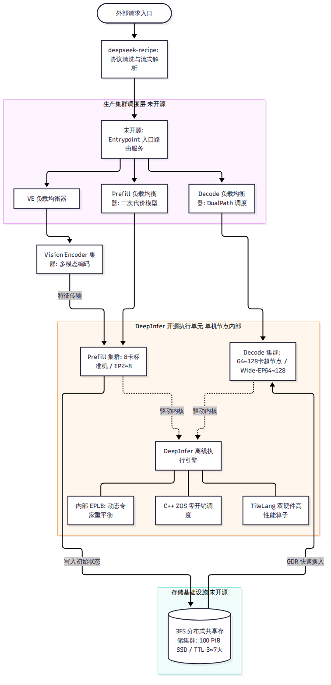
负责处理多模态图像与视频输入。由于视觉 Transformer（ViT）的特征提取属于典型的稠密计算且不依赖文本历史 KV Cache，VE 被剥离为独立的服务池。图片在入口处被统一转化为高维嵌入向量（Embedding），随后直接通过网络移交给 Prefill 节点，不再占用主语言模型的宝贵显存。
专职处理文本与图像的首次大批量上下文编码。Prefill 节点配置为 8 卡小规模并行，主要瓶颈是张量乘法算力。Prefill 节点在完成前 20 层 Encoder 计算后，将生成的初始状态与 890 字节块状 KV 异步推入外置 3FS 存储集群，自身即可立即释放显存，转去抢攻下一个长 Prompt。
专职负责流式输出。Decode 节点配置为 64 至 128 卡超节点，各卡通过高速无阻塞网络组成极宽的专家并行域。Decode 节点直接从 3FS 存储中将请求的初始状态快速换入显存，随后在多卡协同下以极高的 token/s 吞吐流式生成回复。
在大模型分布式推理中，业界通用的标准做法通常是“机内 8 卡做张量并行（TP8），机间再做数据并行或流水线并行”。然而，DeepSeek 的生产规范中赫然写着：生产环境不使用张量并行（TP）与上下文并行（CP）。
张量并行将矩阵切开，每一个注意力层与每一个 MLP
层的前后，都必须在所有卡之间执行一次阻塞式的 All-Reduce
集合通信。 - 在 64–128 卡的超大规模集群中，跨节点执行高频
All-Reduce 会引发严重的网络拥塞与微秒级时钟等待。 -
更致命的是，在 Decode
阶段，瓶颈根本不是计算不足，而是每一卡都需要把分配给自己的模型权重从显存搬进计算单元。TP
并不能减少单步总共需要加载的专家权重总数。
V4.1-Flash 拥有 384 个路由专家。如果只用 8 卡并行（EP8），平均每张卡必须分担 48 到 52 个专家的静态权重（包含冗余），每走一个解码步，GPU 都必须在显存里把这 52 个专家的庞大矩阵搬运一遍。
而一旦将并行度扩大到 64 卡（EP64）： - 每张卡平均仅需托管 6 到 7 个专家！单步的专家权重加载流量直接缩减为 EP8 的 。 - 虽然卡数增多导致 All-to-All 通信的连接数呈平方级增长，但得益于 DeepEP 的高吞吐非阻塞通信与 NVLink 全互联拓扑，通信耗时被极其高效地隐藏在计算之后。
根据官方 Q&A 披露的数据，在相同的并发负载下，从 EP8 提升到 EP64，虽然跨卡通信步数增加，但得益于显存搬运量的暴降，单卡推理吞吐量仍获得了 5% 到 53% 的显著净提升。
为了让读者形成全局时序概念，我们跟踪一个携带长文本和图片的实际生产请求，观察它在整个集群系统中的物理流转过程：
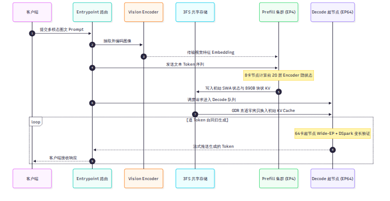
deepseek-recipe，在几毫秒内完成特殊控制符过滤、协议标准化转换，并将长输入切块分段。看完了这一气呵成的工业级流水线，读者便能深刻理解：开源仓库
deepinfer 对应的是上述流程第 3 步和第 7 步中，在 Prefill
机器和 Decode 机器单节点内部驱动物理 GPU
运行的那个执行核心。
至于如何发现节点、如何拉取 3FS、如何跨机路由，全部属于包围在 DeepInfer 外围的未开源工业级系统框架。
既然 DeepInfer 是单节点上的核心发动机，我们现在就把镜头拉近到它的代码实现。下一章，我们将打开仓库源码，从第一行代码开始，绘制出它的内部软件地图。
对于第一次打开 deepinfer-ai/DeepInfer
仓库的开发者来说，扑面而来的近 6 万行 Python 代码、数千行 C++
内核、复杂的共享内存通信以及 6 个 vendor
子模块往往让人无从下手。本章将充当读者的代码导游：我们将逐层剖析仓库的目录职责划分，还原多
GPU 环境下的 Worker 进程模型，并沿着一次实际的
LLM.generate()
调用，步步追踪一个请求在代码各层之间的流转轨迹。
依据对当前锁定 commit（9bd9cf2）的精确统计，DeepInfer
呈现出清晰的“三层两翼”工程布局：
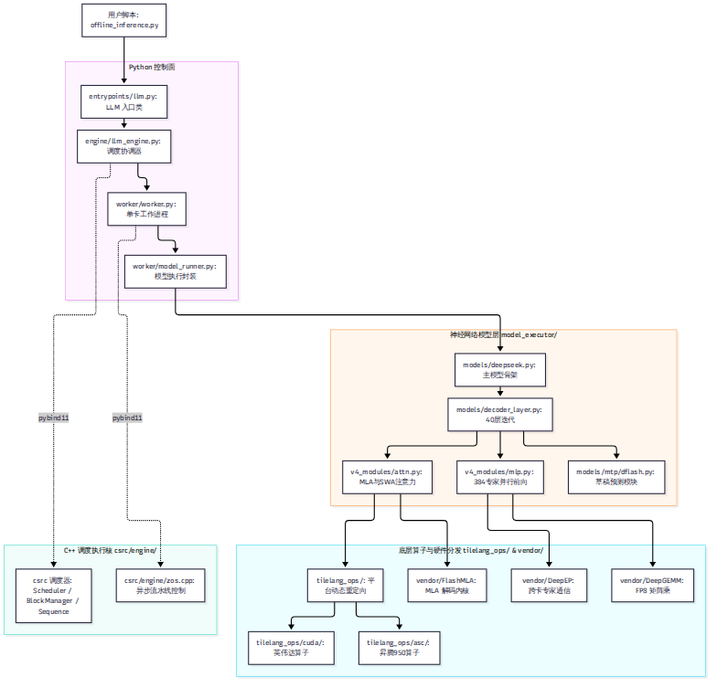
| 顶层目录 | 代码规模与主力语言 | 核心职责与工程定位 |
|---|---|---|
deepinfer/ |
222 文件，47,172 行 Python | 引擎主体控制面，涵盖入口、调度协调、工作进程、模型执行层与 TileLang 算子分发。 |
csrc/ |
18 文件，5,909 行 C++（纯 Host 侧） | 引擎核心性能中枢。负责毫秒级调度器（Scheduler）、显存块管理器（BlockManager）与 ZOS 异步状态控制。 |
vendor/ |
6 个 Git 子模块，纯自研部分约 6.4 万行 | 底层高性能通信与计算算子库：DeepEP（通信）、DeepGEMM（矩阵乘）、FlashMLA（注意力）、DeepSelect（稀疏选择）。 |
deep_cluster/ |
6 文件，1,200 行 Python/Bash | 硬件基础设施拓扑绑定工具，负责 NUMA、CPU Core、NIC 与 GPU 之间的亲和性绑定。 |
examples/ |
14 文件，2,400 行 Python | 离线推理示例（offline_inference.py）、基准压测（benchmark.py）与等价性验证脚本。 |
tests/ |
38 文件，4,800 行 Python | 单元测试套件，重点覆盖算子对齐、批不变、KL 散度与状态缓存操作。 |
eval/ |
12 文件，1,600 行 Python | 正确性评估套件，包含 AIME、GPQA、HLE 等严苛学术评测流水线。 |
在主流的 vLLM V0 架构中，调度器（Scheduler）通常是用纯 Python
实现的。但在 DeepInfer 中，csrc/engine/ 下的
scheduler.hpp、block_manager.hpp 和
sequence.hpp 承担了全部的调度与资源分配，并通过
csrc/engine/pybind_scheduler.cpp 编译为
deepinfer._C.engine 导出给 Python 调用。
将调度器下沉到 C++ 带来了三条决定性的收益： -
释放全局解释器锁（gil_scoped_release）：在调度计算、序列状态构建与块锁定期间彻底摆脱
Python GIL 锁竞争。 -
高频对象池复用：SequenceMetadata 与
RequestOutput 结构体直接在 C++ 对象池中轮转，消除了 Python
垃圾回收（GC）的停顿抖动。 - 零拷贝返回：C++
调度结果直接借用静态向量（Static Vector）以零拷贝 NumPy 数组的形式返回给
Python，极大地压低了每步调度的 CPU 耗时。
当我们在命令行以 8 卡配置启动 DeepInfer（例如
--ep 8）时，系统是如何在物理上组织多进程协作的？
在 deepinfer/engine/llm_engine.py:378-402
中，全局世界大小（World Size）由公式严格决定：
在纯 DP+EP 模式下，系统为每一张物理 GPU 启动且仅启动一个
Worker 进程。全局包含一个特殊的进程内主控者（Driver
Worker，位于主进程），以及
个通过 Python spawn 创建的从属工作进程（Follower
Workers）。
在多 GPU 环境下，如果使用常规的 PyTorch RPC 或 TCP 套接字分发调度指令，序列化与网络协议栈的延迟将吞噬异步调度的收益。
DeepInfer 在 deepinfer/distributed/shm_broadcast.py
中实现了一套极其轻量高效的控制通道： -
无名共享内存环：Driver 与所有 Follower
之间通过一段预先映射的共享内存（1 MiB 循环缓冲区）进行通信。 -
无返回值单向广播：Driver
每次发布指令时，直接将调用的方法名与参数元组
(method, kwargs) 写入该内存环，所有 Worker
通过无锁自旋或条件变量毫秒级唤醒。 - 张量走 NCCL，控制走
SHM：复杂的 seq_metadata_list 并不通过慢速的
Python 序列化广播，而是通过
broadcast_tensor_dict（张量数据走机内 NCCL
广播，轻量元数据走共享内存），Worker 在本地直接重构
InputMetadata。
为了建立直观的执行感知，我们顺着代码调用栈，逐步追踪一次
LLM.generate() 的生命周期：
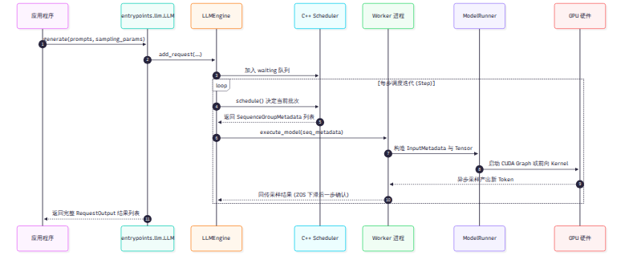
entrypoints/llm.py:generate）：用户传入提示词文本和采样参数
SamplingParams。LLM
实例对输入进行初步分词校验，随后调用引擎的
add_request。engine/llm_engine.py:add_request）：引擎在
C++ 层面分配唯一的 request_id，为该请求建立
Sequence 结构体，并将其挂入 C++ 调度器的
waiting 等待队列。引擎主循环进入连续批处理迭代，不断调用
llm_engine.step()： 1.
调度裁决（csrc/engine/scheduler.hpp:schedule）：C++
调度器被调用。它根据当前显存块的空闲情况，决定从 waiting
队列拉入新请求执行 Prefill，或是从 running
队列挑选已有请求执行 Decode。输出被打包为
SequenceGroupMetadata。 2.
工作进程派发（worker/worker.py:execute_model）：Driver
通过共享内存环唤醒所有 Worker，将调度元数据下发。 3.
输入张量装配（worker/model_runner.py:prepare_input_tensors）：各卡读取本地分配到的
Token，调用 prepare_tensor_input_zos
算子组装注意力掩码、位置编码与槽位映射表。 4.
模型前向（models/deepseek.py:DeepseekModel.forward）：张量进入神经网络。前
20 层执行 MLA 与压缩注意力计算；在第 20
层末端，shared_hidden_kv_proj 投影出 Decoder 块状 KV；后 20
层执行局部 SWA 注意力；MoE 层通过 DeepEP 将 Token
路由至目标卡上的专家网络。 5.
采样与预测（layers/sampler.py:Sampler）：采样器仅在
Driver 端执行。GPU 计算出全词表 Logits，结合温度（Temperature）和 Top-P
规则采样出新 Token。如果是投机模式，DFlash 还会额外生成未来 5
个位置的草稿 Token。
采样的 Token 编号被返回给引擎。在 ZOS
模式下，后处理逻辑被延后到下一步异步执行。当检测到序列生成了
<｜end of sentence｜> 终止符或达到最大长度时，C++
BlockManager 释放其占用的显存块，请求被移入
finished 状态，最终解包为字符串或
RequestOutput 结构体交付给用户。
在 Decode 阶段，单步模型前向的计算时间极短（通常在 1.5–3.0 毫秒之间）。如果每一步都由 Python 动态下发几十个 Kernel，Kernel Launch 的驱动开销就会反客为主。
DeepInfer 在 deepinfer/worker/cuda_graph_runner.py 与
dflash_cuda_graph_runner.py 中实现了对 Decode
全流程的静态图录制： - 按 Token
总数分档：系统并不按请求数录制图，而是以总处理 Token
数（total_q = batch_size × (1 + nextn)）为档位进行等距切分。
- 主模型与草稿图解耦：主模型的 Decode
前向被录制为一张主图，DFlash
的草稿生成被录制为副图。副图显式复用主图的显存内存池（Memory Pool）与
CUDA 流，彻底消除了显存碎片。
deep_cluster/）在拥有多个 CPU Socket、多块 NUMA 内存节点和多块高速网卡的超节点服务器上，跨 NUMA 内存访问会导致总线带宽腰斩。
在引擎启动前，deep_cluster/topology/bind.py 会扫描系统的
PCI 拓扑树： - 将每一个 GPU Worker 进程精确绑定到其物理直连的 CPU Core
核心集合上。 -
将网络通信线程强行锁定在物理距离最近的网卡中断（IRQ）对应的 NUMA
节点上。
这种“软硬件咬死”的拓扑控制，确保了系统在大规模分布式高频通信时，不会因为操作系统的线程随机调度而发生偶发性的毫秒级网络抖动。
deep_cluster
的硬件亲和性强绑定，筑牢了微秒级响应的性能防线。至此，我们已经掌握了引擎的代码脉络。在接下来的第三部分中，我们将正式攻坚 DeepInfer 的核心技术战壕。首当其冲的，便是解决 GPU 空闲气泡的调度艺术。
推理引擎的调度器负责决定每一轮计算放哪些请求、每个请求算几个 token。如果调度器设计不当，GPU 就会频繁停下来等待 CPU 指令。本章探讨 DeepInfer 如何消除调度气泡：它使用零开销异步调度（ZOS）让 CPU 提前一步排定任务，并在 GPU 端就地修正投机解码长度；同时澄清开源版本在 Prefill 分块上与官方部署文档的差异。
在传统的同步调度模型中，解码（Decode）的每一个计算步（step）按严格的先后顺序执行四项操作：
问题发生在采样与后处理之间。CPU 必须拿到采样结果才能更新序列状态并准备下一轮调度。这导致 CPU 在第 3 步结束时必须等待 GPU 完成数据回传。随后，GPU 闲置等待 CPU 完成后处理与下一步的调度决策。
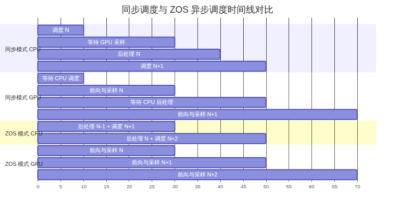
在 Prefill 阶段，由于单次前向计算涉及数千个 token，GPU 计算耗时较长，CPU 调度的几毫秒开销占比相对较低。然而在 Decode 阶段，每个请求每步仅处理几个 token，GPU 单步计算时间通常只有几毫秒。此时 CPU 同步与后处理所占的耗时比例显著放大，GPU 算力出现大面积空闲气泡。
为消除等待，DeepInfer 引入了零开销异步调度（Zero-Overhead Scheduling，ZOS）。ZOS 的核心思路是：在 GPU 执行第 步前向计算的同时，CPU 并行处理第 步的后处理，并提前向 GPU 下发第 步的前向指令。
在代码实现中，ZOS
将同步屏障由当步前向转移到了前一步的采样完成事件。以
deepinfer/worker/worker.py 的执行流为例，CPU
的工作流水线重排为：
schedule(N+1) → launch_forward(N+1) → post_process(N-1) → launch_sample(N+1)这种重排带来两个直接事实： - CPU 的视角比 GPU
慢一步：CPU
在处理输出时，看到的始终是上一步的输出结果。deepinfer/engine/llm_engine.py:824-828
的代码注释明确标示：process_output 在
ZOS=False 时处理当前 step，在 ZOS=True
时处理上一个 step 输出的 token。 -
流水线排空开销：当引擎遇到 Prefill 步时，由于 Prefill
产出的状态必须立即参与后续序列划分，流水线会被强制同步打断，ZOS 机制在
Prefill 后第一个 Decode 步无法形成重叠。
CPU 在安排第 步时，第 步的采样结果仍在 GPU 显存中尚未回传。CPU 无法预知下一步的输入 token 是什么。
DeepInfer 的对策是将“输入 token 填充”操作彻底下放给 GPU
显存内部的映射算子。deepinfer/worker/zos_status.py:23-40
定义了专用的映射结构体 MetadataZOS：
# deepinfer/worker/zos_status.py:23-40（节选）
class MetadataZOS:
remap: torch.Tensor | None
"""remap[i] = j if curr_batch[i] matches prev_batch[j], else -1"""
prev_sampled_token_ids: torch.Tensor | None
"""[prev_n_seq], int32. prev_step sampled_token_ids"""
prev_num_accepted_tokens: torch.Tensor | None
"""[prev_n_seq], int32. prev_step num_accepted_tokens, range [0, MTP_value]"""CPU 虽然不知道具体的 token 编号，但完全清楚请求队列的对应关系。CPU
构造出 remap 数组（新加入的请求标为
，承接上一轮的请求标为对应槽位下标）。GPU
在前向计算前，通过 gather_input_ids_zos 算子直接根据
remap 读取驻留在显存中的
prev_sampled_token_ids。数据无须流经 CPU 主机内存。
在投机解码（Speculative Decoding，详见第 10 章）场景下，ZOS 面临更严峻的冲突：第 步应该为每个请求验证多少个草稿 token，高度依赖第 步模型输出的置信度评分。在异步模式下，CPU 调度第 步时，第 步的置信度根本没有返回。
DeepInfer 的解决方案是分层解耦：CPU 仅负责确定整批的总 token 预算，具体的单个请求长度由 GPU 就地重算。
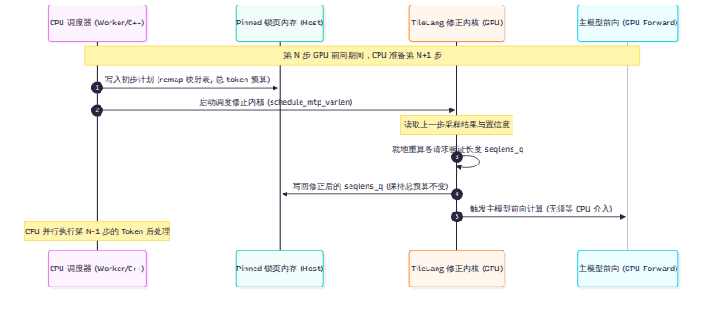
具体执行步骤如下： 1. CPU 调度器根据历史平均接受率预估总 token 预算
total_q，并保持批次总 token 数严格对齐 CUDA Graph
的静态档位。 2. GPU 在执行前向之前，调用由 TileLang 编写的轻量算子
compute_seqlens_q_by_confidence_rates（定义于
deepinfer/model_executor/layers/tilelang_ops/schedule_mtp_varlen.py:11-32）。
3. 该算子直接读取 GPU 显存中的最新置信度向量，动态裁剪每个请求的验证长度
seqlens_q，并同时保证所有请求的 seqlens_q
总和恒等于 CPU 预设的 total_q。 4.
算子将重排后的结果写回一块 Pinned 锁页内存，供下一轮 CPU 参考，同时 GPU
直接启动主模型计算。
通过这种“总预算由 CPU 锁定、细分配由 GPU 就地裁决”的设计，DeepInfer 既保留了 CUDA Graph 的静态显存优势，又避免了 CPU 为等待置信度而暂停流水线。
在大模型处理长上下文输入时，单次 Prefill 包含大量 token。如果不加以分块，单个长请求的前向计算会霸占 GPU 几十秒，导致其他并发请求的生成间隔（TBT）发生严重抖动。
DeepSeek
在官方部署问答（doc/inference_deployment_qa.md:115）中描述了一个精巧的分块方案：基于二次代价模型计算算力配额
compute_quota_limit，结合网络传输时间预算求解最优 Prefill
长度。
然而，在深入查验固定
commit（9bd9cf2）的开源源码后可以证实：开源代码中并没有包含这套二次代价求解器。
- 全仓库对 compute_quota_limit 检索结果为 0 处命中。 -
csrc/engine/flops_estimator.hpp
中虽然包含关于注意力二次项计算的代码，但其实际用途是服务于
StatsLogger 的模型浮点运算利用率（MFU）离线记账（见
tests/engine/test_flops_estimator.py），并未参与在线调度决策。
开源版 DeepInfer 采用的是明确的启发式静态约束分块。调度器在
csrc/engine/scheduler.hpp:160-220 中严格按照以下条件切分
Prefill token：
切分结果进一步受到上下文并行对齐粒度（cp_align）与多模态图片边界的硬性对齐约束。对于超出预算的超长输入，调度器将其拆分为多个连续的
chunk，并在批次达到上限时产生队头阻塞（Head-of-Line
Blocking）。这一差异提醒我们：在生产部署评估时，必须以代码中的实际逻辑为准，不能将文档描述的未开源外围能力误判为引擎固有功能。
在调度重叠与异步执行领域，开源社区存在不同的演进路径：
FutureMap 在 Python
异步事件循环中完成调度与计算重叠。DeepSeek
在部署问答中明确说明其调度思路参考了 SGLang 与 NanoFlow。AsyncScheduler。vLLM 同样采用了用
-1 占位 token
提前推进调度的思路，但在投机解码适配上，由于通用框架需要支持
EAGLE、Medusa 等多种草稿拓扑，其变长验证调度机制相比 DeepInfer
更加通用，但也背负了更多的抽象层开销。DeepInfer 的独到之处不在于发明了调度重叠，而在于将这一思路与特定的 V4.1-Flash 模型深度对齐：把投机验证长度计算固化为特定的 TileLang 算子，彻底避免了通用框架在跨模型支持时的调度冗余。
调度器解决了 GPU 计算步之间的衔接问题；下一章我们将深入显存内部，剖析 DeepInfer 如何管理那些庞大而异构的 KV cache 与状态缓存。
在第 3 章中，我们推导出了 V4.1-Flash 单 token 仅需 890 字节块状 KV 的数学定值。但这 890 字节并不是简单地扔进一块连续数组里就万事大吉了。由于模型同时拥有多层跨层共享的块状 KV、全 40 层的滑动窗口注意力（SWA）以及边界累加状态，显存管理器的设计变得极其复杂。本章将深入显存物理布局，拆解 DeepInfer 内部的 5 类核心缓存，剖析 StateBlock 的 134 槽位环形缓冲，并澄清开源版本在“前缀缓存（Prefix Caching）”上的真实实现机制。
在 deepinfer/worker/cache_engine.py
中，显存并不是一个通用的张量池，而是被严格划分为五种不同生命周期、不同存储格式的专用缓存区：
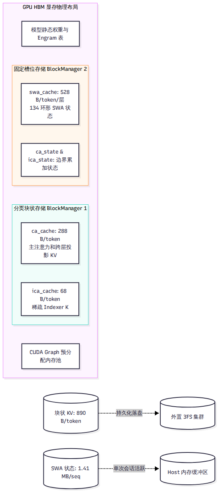
ca_cache（Compressed Attention
Cache）：主注意力块状 KV。采用 FP4（E2M1+E4M3 per-16）格式，单
token 占用 288 字节。仅由第 2、8、14、20 四个源层生成，后 20
层跨层共享。ica_cache（Indexed Compressed Attention
Cache）：稀疏索引器（Indexer）专用的 K 缓存。采用
MXFP4（E2M1+UE8M0 per-32）格式，单 token 占用 68 字节。与
ca_cache 共同构成了 890 字节块状 KV。swa_cache（Sliding Window Attention
Cache）：滑动窗口注意力状态缓存。采用 MXFP8 格式，每层单 token
占用 528 字节。不采用分页存储，而是按并发请求分配独立的固定槽位。ca_state 与
ica_state（压缩边界状态累加器）：张量形状为
[slots, ring 6/7, 2, dim] 的高精度 fp32
累加缓冲，用于维持跨块边界时的加权平均数学连续性。这种五位一体的布局反映了专用引擎的核心特征：不同的缓存区由不同的机制驱动，块状 KV 负责跨请求长期留存，而 SWA 状态仅在当前会话的单步迭代中流转。
与通用框架通常采用 16 或 32 token 的灵活块大小（Block
Size）不同，DeepInfer 在
deepinfer/model_executor/model_metadata_utils.py:134-135
中将块大小硬编码为 128 token。
在显存物理分配上，一个 Block 并不是高维张量，而是一条被拍扁的
uint8 原始字节带： -
字节带按照运行时的层序切段，每一段严格执行 32 字节对齐。 - 整个 Block
的总字节数被强制向上取整对齐到 $ (128, )$，对于 FP4
格式而言，整块大小为固定的 1,152 字节或 4,224 字节。
这种绝对对齐的设计，使得英伟达 Blackwell 架构上的张量内存加速器（TMA）能够以最舒服的 128 字节连续总线突发传输，消除了一切由于非对齐访存造成的带宽惩罚。
为了兼顾 CPU 调度的灵活性与 GPU
内核的执行效率，块表被组织为双层结构： - CPU
侧（Host）：在 C++ csrc/engine/sequence.hpp:206
中维护 std::vector<int>
稀疏块表，负责分配、释放与引用计数统计。 - GPU
侧（Device）：在执行前向计算前，C++ 算子
prepare_tensor_input_base.cpp 将块表快速展开为每 token
稠密副本 [total_q, max_num_blocks] 的 int32
张量，GPU Kernel 无须任何动态指针追踪即可直接根据偏移读取数据。
SWA 的滑动窗口大小明明是
128，为什么在显存规划中，每个序列的状态槽位（StateBlock）却固定分配了
134 个位置？
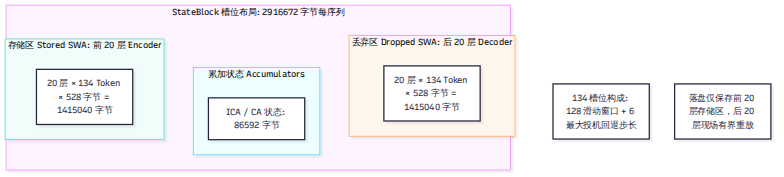
根据 deepinfer/worker/cache_engine.py 的源码约束，134
是经过严密代数推导得出的物理上界：
在投机解码模式下（第 10 章），系统一次性生成并验证 5 个草稿 token。如果前向验证失败，最差情况下模型需要回退至多 6 个位置（5 个草稿 + 1 个当前 token）。环形缓冲区必须在 128 窗口之外额外预留这 6 个安全槽位，确保发生投机回退时，历史上下文不会被覆盖越界。
每个序列分配的 StateBlock 总显存大小固定为
2,916,672 字节（约 2.78
MB），其物理布局严格划分为两部分： - 存储区（Stored
SWA，前 20 层）：占用 1,415,040 字节（20层 × 134 token × 528
字节）。这是序列的活跃历史记忆，当请求暂停或跨节点流转时，只有这部分数据会被刷入主机内存或
3FS。 - 丢弃区（Dropped SWA，后 20 层）：同样占用
1,415,040
字节。但在会话暂停或落盘时，这部分数据会被直接丢弃。因为依托第
8 章的 SWA 有界重放，后 20 层的 SWA
可以在下次激活时在微秒级内现场重新生成，根本不值得消耗宝贵的外存与带宽。
在引擎启动时，系统如何决定把多少显存留给 KV Cache？
在 deepinfer/worker/cache_engine.py
中，显存分配公式为：
系统为静态状态槽预留 308 个 StateBlock（对应 256
个并发序列安全余量），随后在多卡之间取平均值并向下对齐为偶数。整个显存的高水位线（Watermark）被严格限制在
90%，防止大 Batch 突发时发生 CUDA OOM 崩溃。
许多开发者以为部署 DeepInfer 就能自动享受类似 vLLM 的自动前缀缓存（Prefix Caching）。
查验源码后的真实结论是：开源版代码内部并没有内置任何自动前缀树（RadixTree）或块哈希查找机制。
- csrc/engine/block_manager.hpp
内部仅包含空闲双链表与引用计数器，不持有任何哈希索引。 - 代码中所谓的
prefix_caching_hit，在开源树中仅仅是用于支持同一 Prompt
分支采样（Fork Sequence）时的显式块共享（Copy-On-Write 机制）。 -
真正的跨请求自动前缀匹配，依赖的是第 13 章未开源的外部 Entrypoint 网关与
3FS 存储集群。开源引擎仅仅对外预留了 cached_hit_tokens 与
fork_seq 等底层注入插槽。
在通用框架中，前缀缓存与多形态 KV 的管理走出了不同的路线：
UnifiedRadixCache（树核心采用 Rust 编写，支持 Full、SWA 与
Mamba 组件化解耦）。此外，SGLang 提供了三层存储分级（HiCache：L1 GPU /
L2 Host / L3 Storage）。对比可见：vLLM 与 SGLang 强调的是在引擎内部原生实现通用的自适应前缀发现与淘汰；而 DeepInfer 则是将前缀管理彻底剥离给外置 3FS 存储集群，单机引擎只做最硬核的 128 对齐与 FP4 极速读写。
当缓存命中但唯独缺少局部 SWA KV 时，或者跨层计算需要重构上下文时，该如何处理？下一章，我们将见证 DeepInfer 最精妙的协同设计——SWA 有界重放。
如果说 DeepInfer 有哪一个技术点最能代表“模型算法结构与推理系统底层工程的深度协同”，那必然是 SWA 有界重放（SWA Bounded Replay）。
在长文本前缀缓存命中或跨层计算时，常规推理引擎面临两难：要么把长达数万 token 的历史全部重新前向一遍以精确恢复局部注意力，要么永久常驻保存所有历史状态导致显存枯竭。DeepInfer 另辟蹊径，利用 V4.1-Flash 的数学结构，以不可思议的常数计算开销斩断了历史依赖。本章将完整推导有界重放的数学逻辑、算力减半账本与精度验证证据。
滑动窗口注意力（Sliding Window Attention，SWA）的基本定义非常简单：在注意力计算时，每个 Token 不再与前文所有 Token 交互，而仅仅关注距离自己最近的 个 Token（V4.1-Flash 中 ）。
初看起来，既然只看最近 128 个 Token，恢复状态岂不是只需算这 128 个词？事实并非如此。
在大模型的深层网络中，信息是逐层传递扩散的： - 第 1 层的 Token 依赖第 0 层的 128 个前文 Token。 - 第 2 层的 Token 间接依赖第 0 层的 个前文 Token。 - 到达第 20 层时，其数学感受野（Receptive Field）在理论上已经累积扩散至 个历史 Token。
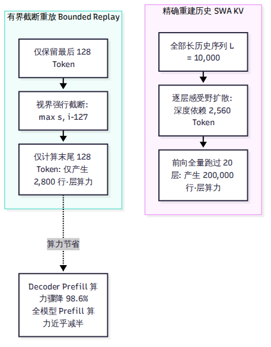
正如官方部署问答（doc:187）所述：如果要完全精确地重建第
20 层的 SWA 状态，系统就必须把最后 2,560 个历史 Token 重新跑过整整 20
层网络。当序列长度达到 10,000 甚至 100,000
时，一旦需要恢复中间状态，系统就不得不付出巨大的冗余前向计算，导致前缀缓存的性能收益大打折扣。
面对感受野黑洞，DeepSeek 算法团队与系统团队做出了一个极其大胆的设计：直接在数学上将历史视界暴力截断。
在有界重放模式下，模型规定：位于位置 的 Query，其能够参与注意力计算的 Key 集合被严格硬性限制在区间：
其中 为重放区间的起始位置。这意味着，对于落在重放窗口内的 Token，它不仅在物理上只看最近 128 个词，而且绝不允许它向窗口之外的更早历史做任何隐式感受野回溯。窗口左侧的所有历史被直接视为不存在。
在底层算子层面，这种截断并不是通过缓慢的动态布尔掩码（Boolean Masking）实现的。
在 csrc/engine/prepare_tensor_input_v4.cpp:149-168
中，C++ 调度器为重放区间的每一行 Query 计算出 4
个紧凑的整数枢轴（Pivots），明确划定历史段与当前 Chunk
段的起止边界。随后，TileLang 算子 swa_index.py
将其一次性展开为 [total_q, 128]
的稠密绝对索引矩阵。任何落在窗口之外的列直接填入
，GPU
在加载 Key 向量时直接跳过无效列，没有任何多余的访存开销。
有界重放机制并非纸上谈兵，它在 DeepInfer 的全流程中精准攻坚了两个核心战场：
在长文本多轮对话中，用户的新请求命中了外置存储集群中已有的 100,000 个 Token 前缀。3FS 存储集群迅速换入了这 100,000 个 Token 的 890 字节块状 KV，但正如第 7 章所述，出于外存带宽考虑，庞大的逐层 SWA 状态并未全量落盘。
此时系统缺失了最后几个 Token 的 SWA 活跃窗口。有了有界重放，系统不需要把前文重算一遍，仅仅截取前缀末尾的 128 个 Token 跑一遍前 20 层 Encoder，以微秒级的时间代价现场补齐 SWA 状态，便能立刻无缝进入 Decode 生成。
这是全书最具震撼力的性能账本。回顾第 3 章：V4.1-Flash 的前 20 层为 Encoder，后 20 层为 Decoder（YOCO 架构），后 20 层的块状 KV 直接由第 20 层末端的隐藏状态一次性投影生成。
这意味着：后 20 层 Decoder 在 Prefill 阶段根本不需要生成块状 KV，它们唯一需要的是为后续 Decode 生成阶段准备好末尾 128 个 Token 的局部 SWA 状态！
我们以一个包含 个 Token 的长输入为例，列出算力对照账本：
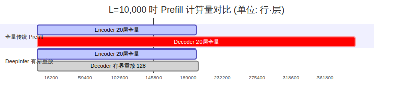
| 计算阶段 | 传统全量 Prefill 计算量 | DeepInfer 有界重放计算量 | 实际节省幅度 |
|---|---|---|---|
| 前 20 层 Encoder 算力 | 20 层 × 10,000 = 200,000 行·层 | 20 层 × 10,000 = 200,000 行·层 | 0%（必须全量抽取语义） |
| 后 20 层 Decoder 算力 | 20 层 × 10,000 = 200,000 行·层 | 20 层 × 140 = 2,800 行·层 | 直降 98.6%（71.4 倍收益！） |
| 全模型 Prefill 总算力 | 400,000 行·层 | 202,800 行·层 | 整机算力削减 49.3%（接近腰斩） |
| 中间 SWA 显存写流量 | 100.7 MiB | 1.41 MiB | 访存写流量下降 98.6% |
通过有界重放，在处理 的长文本输入时，整整 20 个 Decoder 层的计算直接从 20 万行压缩至 2,800 行。官方文档中宣称的“几乎让 Prefill 总计算量减半”，其背后的物理真相正在于此。
在环境变量与代码中，经常出现 134 与 140 两个参数： -
134：物理与存储的精确下界（128 窗口 + 6 投机回退）。 -
140（DEEPINFER_YOCO_PREFILL_KEEP_TOKENS=140）：DeepInfer
在示例和运行时的默认策略值。它在 134 基础之上额外保留了 6 个 Token
的前缀平滑冗余（），确保在各种边界切片下均满足
$ $ 的安全不等式。
任何工程师在听到“强行把注意力截断、强制舍弃深层历史感受野”时，脑海中浮现的第一个问题必然是：这样干难道不会破坏模型输出的质量，让模型变笨吗？
答案是否定的。因为 DeepSeek 在模型后训练（Post-Training）阶段，就已经在数据流水线中显式加入了有界重放的截断模拟。换言之，模型在训练时就已经习惯了这种“局部 SWA 视界被强行裁剪为 128”的环境，并学会了将长程宏观语义全部委托给第 20 层的全局隐状态。
在仓库 examples/yoco/yoco_equiv.py 中，DeepSeek
提供了两级严密的单元校验： - L1 级测试：在 10
种不同形状（单请求、多批次、带 Padding、带
Chunking）下，验证切除无用行的紧凑张量算子（Compact View）与全量 Mask
算子的数学输出逐元素绝对等价。 - L2 级测试：在多 GPU
环境下以 Teacher-Forcing 模式逐位比对全流程的 Logits、Top-K
概率与置信度评分。
在 vLLM 官方博客与社区 PR #58132 对 V4.1-Flash 的独立评测中，针对开启与关闭 YOCO 有界截断的数学基准测试进行了严格横评： - GSM8K 数学推理得分：开启截断为 0.9249，关闭截断为 0.9303，差异完全处于标准统计误差（Standard Error，$ =0.0072$）范围之内。 - GPQA 权威问答评测：精度波动小于 1.5 SE。
实验数据有力证明：在训练期预先适配的前提下，这种激进的工程近似并没有损伤模型的核心推理能力。
在 DeepInfer 开源之后，有界重放的设计思想迅速引发了通用框架的跟进：
yoco_truncation），允许在部署 V4.1-Flash
时通过参数启用类似的 Prefill 截断以降低显存和计算耗时。但与通用框架将有界重放视为“特定模型的特殊优化插件”不同，在 DeepInfer 中，这一机制是深深烙印在整个引擎骨架内部的原生血液。
解决了单节点内部的调度与算力压缩后，我们需要重新面对多卡分布式的世界。下一章，我们将剖析 DeepInfer 如何在数十张显卡上组织专家并行与动态负载均衡。
在拥有 763B
参数的混合专家模型（MoE）面前，单卡显存甚至无法装下它的静态权重。但如果只是简单地把模型横切或者纵切，网络通信开销会立刻成为新的吞吐黑洞。本章探讨
DeepInfer
的分布式并行体系：它彻底摒弃了主流框架常用的张量并行（TP），采用“Attention
做数据并行（DP），MoE
做专家并行（EP）”的正交混合模式，依托宽专家并行（Wide-EP）大幅压降权重访存，并通过两级贪心
EPLB
算法与对称内存（symm_mem）实现了运行期动态专家重平衡。
在
deepinfer/model_executor/parallel_utils/parallel_state.py
中，系统的通信拓扑被严格划分：
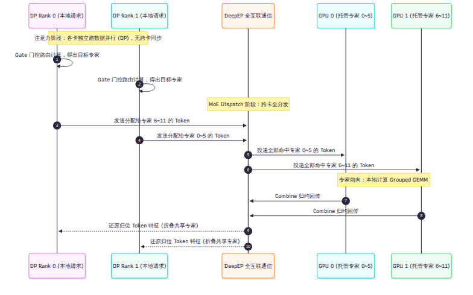
系统规定：注意力的数据并行度（dp_size）与专家的并行度（ep_size）严格相等。全局进程的
Rank 映射完全遵循三维网格公式：
在没有开启上下文并行（cp_size=1）的常规模式下，GPU
数量就等于数据并行度与专家并行度。
在计算多头潜在注意力（MLA）与滑动窗口注意力（SWA）时，每一张 GPU
完全作为一个独立的数据并行节点运作。 -
各张卡处理分配给自己的独立请求序列，互相之间没有任何集合通信（没有
All-Reduce，也没有 All-Gather）。 -
由于各卡上的请求长度不同，各个 DP
节点独立在本地对齐批次，并自主挑选匹配的 CUDA Graph
档位。卡间仅在每步开始前通过一次极轻量的 MIN All-Reduce
投票对齐当前的步型（Prefill 还是 Decode）。
一旦张量进入 MoE 专家层，计算模式立刻发生剧变： -
门控分发（Dispatch）：每张卡上的门控网络计算出当前输入
Token 选中的 6 个路由专家编号。随后，调用底层 vendor/DeepEP
通信库执行跨卡 All-to-All 全互联通信，将 Token
向量精准投递至对应专家所在的 GPU。 -
专家前向（Forward）：各卡接收来自全集群投递过来的 Token
批次，在本地调用 DeepGEMM 执行高效的分组矩阵乘法（Grouped
GEMM）。与常规框架不同，DeepInfer 的共享专家（Shared
Expert）与路由专家并行计算，不占用独立通信。 -
归约汇合（Combine）：计算完毕后，再次调用 DeepEP
将专家输出跨卡汇总回原始卡，并在通信归约的 Epilogue
阶段直接将共享专家的输出折叠进去（bias = shared_out），省去了一次额外的显存写回。
为什么 DeepInfer 要将 Decode 阶段的专家并行度拉升至 64 甚至 128 张卡？
在 Decode 阶段，单步生成的本质瓶颈是显存带宽。我们对比 8 卡小集群（EP8）与 64 卡超节点（EP64）在托管 384 个专家时的真实访存负荷：
| 评估指标 | EP8 并行配置 | EP64 并行配置（Wide-EP） | 物理变化与收益 |
|---|---|---|---|
| 单卡托管专家数 | 48 专家（带冗余约 52 个） | 6 专家（带冗余约 7 个） | 单卡专家权重减少至 13.5% |
| 单步权重访存量 | 约 55.4 GB/卡 | 约 7.46 GB/卡 | 单步显存搬运量暴降 7.43 倍！ |
| 通信域大小 | 单机 8 卡 NVLink 环 | 64 卡跨机 NVLink / 专用网络 | 通信连接数扩大 8 倍 |
| 硬件瓶颈属性 | 严重卡死在显存带宽上限 | 瓶颈转移至网络通信与小算子启动 | 通信被有效重叠在计算背后 |
| 单卡输出吞吐量 | 基线（1.0×） | 提升 1.05× 至 1.53× | 净吞吐提升 5% 到 53% |
如上表所示，虽然 64 卡互联导致通信拓扑变大，但将单步权重搬运量砍掉 7 倍以上的巨大收益，远超通信带来的边际延迟。这就是 DeepSeek 坚决在生产环境中推行 64–128 卡物理超节点部署的底层经济学依据。
在真实的推理场景中，用户提问往往具有极强的专业领域集中性（例如全网大量用户同时在写代码或做数学题）。这会导致负责代码和数学的某几个专家被极高频地选中，而大量日常对话专家无人问津。被选中的 GPU 瞬间算力过载，而其他 GPU 只能空转等待，这就是 专家负载不均衡（Expert Imbalance）。
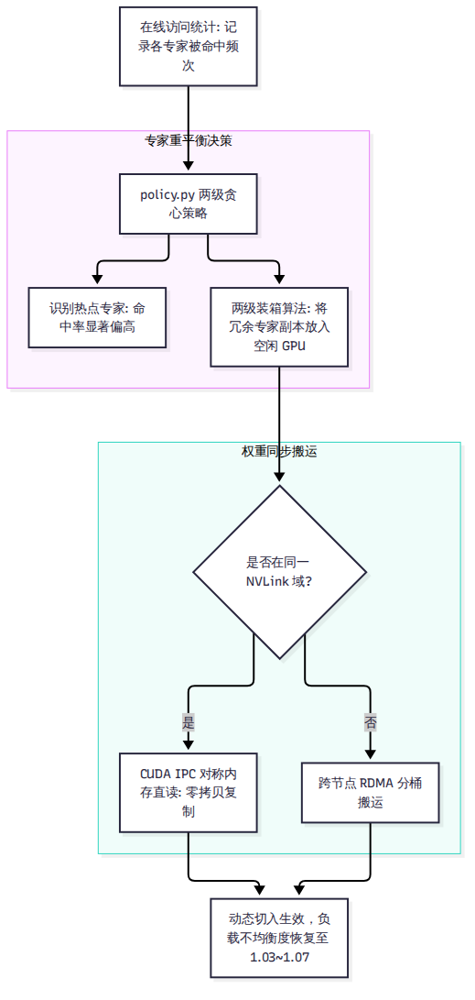
policy.py）为了根治热点，DeepInfer 在
deepinfer/model_executor/eplb/policy.py
中实现了专家负载均衡器（Expert Parallelism Load Balancer，EPLB）： -
系统在每张卡上保留微量冗余专家插槽（Prefill 模式默认预留 16 个，Decode
模式预留 4 个）。 - 在线监控器以滑动窗口统计各个专家的实时命中频次。 -
调度器采用两级贪心装箱算法：第一级根据全局命中率，计算出最热的专家应当复制多少份冗余副本；第二级以最小化所有计算步中“最大单卡负载”为目标，将热门专家副本均匀分配到当前最空闲的
GPU 上。
symm_mem）的极速权重搬运一旦决定将某个专家从卡 A 复制到卡
B，几百兆的权重矩阵如何在不中断服务的前提下搬运过去？在
deepinfer/model_executor/eplb/shuffle.py 中： - 如果卡 A
与卡 B 处于同一个机内 NVLink 域，系统直接调用基于对称内存（Symmetric
Memory）的 CUDA IPC
机制，目标卡直接跨总线直读源卡的显存，实现近乎零拷贝的内存镜像复制。 -
仅当发生跨机搬运时，系统才退化为分桶的 P2P 网络传输。
moe_lb
官方数字冲突的真相在第一波调研（Q01）中，我们发现官方知乎文章记录的均衡度（1.0320）与
Q&A 文档记录的数字（1.074）不一致。
查阅代码后证实：这是因为源码中实际并存两套评估口径——stats_logger.py:238-241
统计的是全局最大负载与均值比率（），而
eplb/__init__.py:310 统计的是单卡绝对平衡度
rank_balance。两套数字均属真实实测，反映的是不同统计窗口和评估粒度下的健康水平（通常控制在
1.03 到 1.07 之间，表明负载极其均衡）。
长文本 Prefill 往往需要将单请求切分到多张卡上，这称为上下文并行（Context Parallelism，CP）。
在自回归因果模型中，第 1 个 Token 只能看自己（计算量为 1），而第 10,000 个 Token 可以看前文所有 10,000 个词（计算量为 10,000）。因果注意力矩阵是一个下三角矩阵。
如果简单地按先后顺序将长序列切成 4 份分给 4 张卡： - 卡 0 分到序列头部，计算量极小（梯形顶端的小三角形）。 - 卡 3 分到序列尾部，计算量极大（底部的完整梯形）。卡 0 算完早早闲置，整机算力被卡 3 拖慢。
在 tilelang_ops/prepare_cp_mirror.py 中，DeepInfer
实现了被称为 Mirror CP（代码中亦称 Zigzag
切分）的对称方案： - 系统将长序列等分为
块。 - 对于第
号 Rank，系统分配给它的不是连续的一段，而是第
块与第
块的一头一尾对称组合。
通过这种“首段轻负载 + 尾段重负载”的对偶捆绑，每一张 GPU 所分担的因果 计算对总数被精确拉平，彻底消除了下三角注意力在分布式环境下的几何倾斜。
在超大规模 MoE 并行领域，通用框架的演进十分迅速：
--attn-dp-size，并针对 V4.1-Flash
推出了专门优化的全互联通信镜像。与通用框架需要通过复杂的命令行参数自适应检测不同网络拓扑不同，DeepInfer 的代码从一开始就将 DeepEP 与对称内存写死在核心执行流中，以放弃通用拓扑为代价，换取了无条件的最短代码路径。
symm_mem）直读，解决了动态热点专家的倾斜问题；Mirror
CP 则抹平了因果注意力的几何负载差异。除了在多卡之间高效搬运专家权重，如何在单张卡内部让模型生成得更快？下一章，我们将剖析 DeepInfer 的加速利刃——DSpark 变长投机解码。
在大模型自回归解码（Decode）中，常规做法是每一步只让大模型输出一个 token。为了打破这种单步单词的低效，投机解码（Speculative Decoding）让小草稿模型先行猜测若干候选词，再由大模型一次性并行验证。
然而，在工业级大规模并发服务中，传统的固定长度验证策略（例如所有请求一律验证 5 个 token）反而会拖慢整体吞吐。本章深入剖析 DeepInfer 的投机解码体系：它基于非因果并行草稿模型 DFlash，融合创新的 DSpark 变长验证算法，通过置信度评分动态裁剪验证前缀，并在生产饱和并发下实现了 4% 到 7% 的系统净吞吐提升。
在理想状态下，草稿模型如果猜出 5 个 token 且全部被主模型接纳，解码速度就能提高数倍。然而在真实业务中，长文本的复杂逻辑往往导致草稿预测的接受率（Acceptance Rate）波动剧烈。
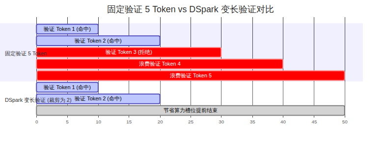
如果系统对所有请求固定验证 5 个 token： - 假设某个请求在第 2 个 token 就预测错误被主模型拒绝，按照因果自回归规律，后续已经算完的第 3、4、5 个 token 的算力就全部白费了。 - 在单卡并发序列数达到 60 乃至 100 的生产高负载场景下，如果每个请求都强制塞入 5 个验证 token，单批次的 Token 总数会迅速膨胀到数百甚至上千。 - 此时，GPU 的瓶颈发生物理转移：它不再受限于显存带宽，而是直接被巨量的无效投机验证填满，撞上了张量计算单元（Tensor Core）的算力天花板。
盲目地多猜多验，在生产高并发下反而会恶化每步延迟。系统迫切需要一种机制：能够在前向计算发生之前，精准预测哪些草稿词胜算较高，并主动砍掉那些胜算极低的尾部候选词。
在了解如何裁剪验证之前，我们必须先看清草稿 token 是如何以极低代价生成的。
V4.1-Flash 的草稿生成基于 DFlash 架构（对应学术成果
arXiv:2602.06036，UCSD Jian Chen
等人工作）。它并没有引入一个独立外挂的小模型（如传统 EAGLE
系列），而是直接在主干模型顶部挂载了 3 个轻量级的草稿 Transformer
层（层号 40、41、42，定义于
deepinfer/model_executor/models/mtp/dflash.py）。
与传统小模型需要串行自回归前向 5 次不同，DFlash
是一次性、块级并行前向： - 输入构造：输入由 1 个真实
Token（Golden Token）与 4 个噪声占位符（Noise
Tokens）拼接而成，张量长度固定为
5（dspark_block_size = 5）。 -
块内非因果双向注意力：在
get_kv_index.py:183-197 中，5
个草稿位置共享同一份针对主干历史的注意力索引，并在 5
个候选槽位内部执行双向注意力。 - 单步出全块：DFlash
仅仅经历 3 个轻量层的计算，便在单次前向中同时输出了未来 5
个位置的草稿表征向量。块内缺乏单向因果掩码带来的语法漂移，由采样时内置的一个秩为
256 的马尔可夫头（Markov Head）予以补偿。
拿到 5 个草稿 Token 之后，验证多少个才是全局最优？这就是 DSpark 算法（对应学术论文 arXiv:2607.05147，DeepSeek-AI 与北京大学联合研究）的核心使命。
在 DFlash 的最后一层，模型配备了专门的置信度投影层（定义于
mtp/dflash.py:46-79，参数名为
mtp.2.confidence_head.proj.weight，形状为
[1, 5376]）。置信度头为每一个草稿 Token 输出一个标量概率值
，代表该位置草稿能够通过主模型验证的置信度。由于自回归必须从前向后连续接纳，第
个 Token 能够存活的联合概率为累乘值：
在 csrc/engine/mtp_varlen.hpp:150-267
中，系统维护了一张实测的 GPU 延迟性能表。该表记录了当前硬件在不同 Token
批大小（total_q）下的真实步耗时曲线
。
对于批次中的每一个请求，调度器计算其边际验证收益：
算法按贪心原则，优先为联合生存概率高、边际产出大的请求分配更长的验证长度，而对置信度断崖下跌的请求，坚决将其验证长度从 5 截断至 2 或 3，甚至直接截断至 1（退化为单字生成）。
正如第 6 章所揭示的，为了避免在异步调度（ZOS）下等待置信度回传
CPU，这一求解过程在 GPU 内部由 TileLang 编写的
compute_seqlens_q_by_confidence_rates 算子就地执行。GPU
算子在保持批次总 Token 数严格锁定的前提下，动态重配各序列的
seqlens_q，完美契合了 CUDA Graph 的静态档位。
在官方部署文档中，DeepSeek 公布了一组详实的 DSpark 实测对照表。许多开发者在阅读该表时常常感到困惑：为什么在低并发时变长验证反而吞吐下降，而只有在饱和并发下才显现出威力？
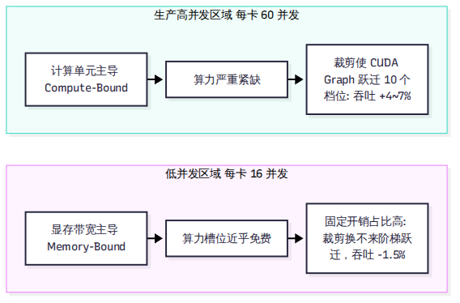
我们提取官方实测核心工作点数据进行物理拆解：
| 单卡并发序列数（Concurrency） | 固定验证平均长度 | DSpark 变长验证平均长度 | 平均接受 Token 长度 | 相对吞吐收益 | 真实物理瓶颈与解释 |
|---|---|---|---|---|---|
| 16（极低负载） | 5.0 | 4.41 | 3.29 → 3.21 | -1.5%（略微亏损） | 访存受限（Memory-Bound）：计算单元大面积闲置，“多算几个验证 Token 近乎免费”。截断带来的耗时缩短极小，无法抵消接受长度损失 2.4% 的负面影响。 |
| 32（中等负载） | 5.0 | 3.92 | 3.29 → 3.25 | +1.8%（微弱盈利） | 瓶颈过渡区：算力开始收紧，算力节约与接受率微降达到平衡拐点。 |
| 60（生产标准工作点） | 5.0 | 3.48 | 3.29 → 3.27 | +4.8%（显著增益） | 算力受限（Compute-Bound）：GPU 计算核心完全打满。将批次总 Token 压低后，CUDA Graph 跨越了近 10 个等距档位，步耗时大幅缩短，净吞吐提升立竿见影。 |
| 96（超高负载极限） | 5.0 | 3.21 | 3.29 → 3.26 | +7.1%（极限增益） | 严重算力赤字：无效验证被大规模剔除，系统在极限吞吐下维持了稳定的高步频。 |
这一组物理数据给出了极其严肃的工程教训：没有无条件的加速算法。DSpark 变长验证的本质是在算力紧缺的生产工作点上，通过以微小代价（接受长度下降不到 1%）换取计算批次的大幅精简，进而激活 GPU 步频提升。如果在个人单卡或极低并发下运行，应当主动关闭变长验证以避免负优化。
作为大模型推理加速的通用武器，投机解码在各大开源框架中均有重要布局：
与通用框架需要通过复杂的抽象层兼容多种不同的草稿生成结构不同，DeepInfer 的代码直接将 DFlash 的 3 层拓扑与 DSpark 的延迟优化器深度固化，在单一赛道上实现了最小的运行时损耗。
在搞清楚了上层的调度、内存、重放与投机之后，我们必须将目光投向最底层的硬件基石。下一章，我们将探究支撑 DeepInfer 运转的 5 大高性能内核库以及它如何同时驯服 NVIDIA 与昇腾两种芯片。
在大模型推理系统的最底层，一切高层设计最终都要落地为 GPU 或 NPU 计算核心（Core）上的汇编指令。
DeepInfer 的独特之处在于：它没有依赖通用的 PyTorch 原生算子，而是将计算底座完全构筑在 5 个高性能自研内核库之上；同时，它凭借新兴的 TileLang 编程语言，成功在英伟达 Blackwell（SM100）与华为昇腾（Ascend 950）两套硬件架构迥异的芯片上实现了算子级统一分发。本章将拆解这 5 大内核金刚的调用现场、剖析 Scale-Up 域内的 Mega MoE 融合算子，并直面开源版 FlashMLA 相比内部自用版的性能落差。
在 DeepInfer 的 vendor/ 目录下，嵌入了 6
个专用的底层开源 Git 子模块（包含英伟达与昇腾专用版本），配合独立发布的
tile-kernels，构成了支撑系统的五大算力支柱：
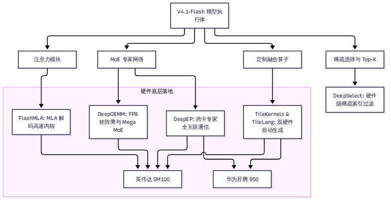
FlashMLA：多头潜在注意力（MLA）的高性能解码内核。在
deepinfer/model_executor/models/v4_modules/attn.py:617, 660, 994
等关键位置被直接调用，专门负责低维度共享 Latent
向量的高速注意力计算。DeepGEMM：针对 FP8
低精度矩阵乘法深度调优的 GEMM 内核库。在模型全流程中承担绝对重任：在
linear.py:165 被用于稠密投影，在
mlp.py:119, 130, 398 被用于 MoE 专家的门控与第二层 MLP
投影，在 index_attn.py:299, 317 被用于稀疏索引投影，并在
hc.py:270 支撑 mHC 的残差混洗。DeepEP：专为超大规模 MoE
专家并行打造的高吞吐通信库。在 v4_modules/mlp.py:469, 501
中被直接调用，全权接管跨卡跨节点的 Token Dispatch（分发）与
Combine（汇总归约）全互联通信。DeepSelect：专用的硬件级 Top-K
与稀疏索引选择库。在 v4_modules/index_attn.py:216, 361, 494
中被调用，负责在微秒级时间内从上万个历史上下文块中精准挑选前 512
个最高相关性的候选块。TileKernels：由 TileLang
自动生成的轻量级融合算子包（通过 pip 安装
tile-kernels==2.1.0）。在 mlp.py:400, 436, 521
中处理门控激活、缩放对齐以及各种特殊的内存切片重排。在深度学习框架中，支持多硬件最容易犯的错误是在上层业务逻辑中充斥着大量的
if is_cuda(): ... else if is_npu(): ...。这种写法不仅极难维护，而且极易引入数值不一致。
DeepInfer 采用了一种极其干净的三层分发架构： -
上层接口层（tilelang_ops/ 根目录）：包含
33 个 Python 模块，向模型层暴露完全平台中立的算子函数签名（如
gather、store_kv_cache、state_cache）。
-
动态重定向中枢（ops.py:13-22）：在引擎启动导入时，ops.py
检测当前环境的
PLATFORM.tilelang_ops_backend，依据当前芯片类型，动态将算子实现的名字级绑定指向底层具体的硬件子目录。
- 底层镜像实现层（cuda/ 与
asc/）：在 tilelang_ops/cuda/（30
个文件，4,968 行）与 tilelang_ops/asc/（30 个文件，7,418
行）中，DeepSeek 为两套硬件各自手写了一一对应的 43
个底层算子。两套代码在张量输入输出规范上保持完全一致。
虽然上层接口保持一致，但在底层的微架构指令排布上，英伟达与昇腾走的是两条截然不同的体系结构道路：
| 硬件维度 | 英伟达 Blackwell（SM100）实现路线 | 华为昇腾 950（Ascend 950）实现路线 |
|---|---|---|
| 异步数据搬运 | 依赖硬件级张量内存加速器（TMA），配合异步屏障（MBarrier）执行非阻塞式直接显存搬运。 | 依赖多核向量引擎的显式指令流水，利用片上统一缓冲区（Unified Buffer，UB）多版本乒乓缓冲。 |
| 并行计算组织 | 依赖 Warp-Specialized 编程范式，将同一个线程块内的线程明确划分为“专门搬数据的 Warp”与“专门算矩阵的 Warp”。 | 采用持续向量核心（Persistent Vector Core）架构，在 TileLang
源码中大量嵌入针对昇腾达芬奇架构的手写 SIMD 指令（S.v*
指令达 623 处）。 |
| 数据类型与通信 | 深度依赖 FP4 E2M1 与 int32
索引；底层进程通信走 NCCL。 |
依赖昇腾专有的 FP8 x FP4 混精指令与 int16
紧凑索引；通信走 HCCL 集合通信栈。 |
| 功能支持差异 | 全功能支持：完整支持 Mega Gate、Mega mHC、BF16 Mega MoE、稠密注意力融合以及全流程批不变。 | 轻微裁剪：昇腾当前版本缺失了部分高阶融合特性（Mega Gate、mHC 融合），部分复杂算子回退为离散流水线。 |
这种深入微架构的定制，保证了代码在英伟达平台上能把 Blackwell 的新硬件特性榨干，而在昇腾平台上也能完全贴合昇腾达芬奇核心的向量指令流水。
在第 9 章的分布式讨论中，MoE 的前向计算被拆分为三个步骤：DeepEP Dispatch → Grouped GEMM → DeepEP Combine。这意味着张量必须在显存中读写至少 3 次，且需要启动 3 个不同的 Kernel。
在单台 8 卡服务器内部（同属于单机高带宽 NVLink 互联的 Scale-Up 域），DeepInfer 启动了一项杀手级优化——Mega MoE。
在
deepinfer/model_executor/models/v4_modules/mlp.py:184-188
中，当系统检测到并行域满足
is_within_nvl_domain（全组均在机内 NVLink
直连范围内）时，前向计算直接切入由 DeepGEMM 提供的
Persistent Mega Kernel： - 网格大小锁死在物理 SM
数量：Kernel 启动后常驻在 GPU 计算单元上，不再反复退出。 -
通信与计算在一处完成：Token 路由分发、L1 投影、SwiGLU
激活函数、L2 降维投影以及跨卡结果汇总归约，被强行熔铸在同一个单一 Kernel
内部完成。 - 零中间显存换出：Token 向量在片上 SRAM
中流转，完全消除了中间张量写入显存 HBM 再读出的巨大带宽浪费。
官方文档明确指出：在一个 Scale-Up 紧耦合域内，Mega MoE 的性能在物理上总是领先于传统的分离式调用。
在技术评估中，我们必须保持严谨的求真态度：开源的算子和 DeepSeek 线上内部自用的算子完全一样强吗？
根据官方技术问答（doc/inference_deployment_qa.md:233-237）的坦白披露：
> “The open-source FlashMLA kernel lacks a specialized hand-tuned
SASS instruction scheduling optimization that exists in our internal
proprietary build.”
在英伟达 GPU 汇编体系中，SASS 是直接对应硬件指令发射槽位的底层微码。DeepSeek 内部版本针对 Blackwell 的双发射指令流水线进行了极致的手工 SASS 微码重排： - 微观算子差距：由于缺少这一层专属手工 SASS 调优，开源版 FlashMLA 的单算子解码内核（Decode Kernel）比内部生产版本慢 5% 到 10%。 - 宏观端到端差距：但因为注意力计算在端到端整步时间中仅占一部分（大部分耗时仍由 MoE 专家网络占据），这一微观差距在端到端整机吞吐量上被大幅稀释，最终整机性能落差不超过 5%。
这种开诚布公的工程坦白，恰恰为我们评估开源基准提供了极为宝贵的客观校准坐标。
cuda/ 与
asc/ 30 对镜像算子，实现了在英伟达 Blackwell 与华为昇腾 950
上的深度微架构适配。有了极致的计算速度，推理系统还必须保证另一个核心命题：计算结果是否值得信赖？ 下一章，我们将探讨 DeepInfer 如何保证结果在不同批次下绝对可复现，并实现强约束的结构化输出。
在严谨的技术评测或对确定性要求极高的金融、法律、数学代码场景中，开发者常常会遭遇一个令人崩溃的现象：同一个 Prompt、固定了相同的随机种子（Seed），仅仅因为当前批次（Batch）里混入了几个其他用户的随机请求，模型输出的内容就发生了改变！
这种不可复现性不仅给学术基准测试带来了巨大干扰，也在生产落地中埋下了合规隐患。本章将剖析 DeepInfer 如何对抗浮点非结合律实现“批不变（Batch-Invariant）推理”、如何实现绝对严格的确定性采样，以及如何基于 xgrammar 自动机实现 100% 格式合规的结构化输出。
同样的输入，在单并发时和在 64 并发时，为什么会在某些 token 处发生概率分叉？
在计算机底层，IEEE 754 浮点数加法并不满足数学上的结合律：
在追求极致性能的通用推理引擎中，许多算子（如矩阵乘法的 split-K、注意力的 split-KV 以及多 GPU 通信归约）为了打满并行度，会根据当前批次的大小动态决定切分多少个并行线程块（CTA）。 - 当 Batch 大小时，数据被切分成 4 个块在并行树上做规约加法。 - 当 Batch 变小时，数据被切分成 2 个块做规约加法。
累加顺序的微小改变，在第 7 位有效数字（单精度）或第 3 位有效数字（半精度）上引入了极其微弱的舍入漂移（1 ULP 误差）。经过 40 层深层网络的逐层非线性放大，最终可能导致两个极具竞争力的词之间的 Logits 发生翻转，从而产生完全不同的输出。
在 deepinfer/environ.py 中，开启
DEEPINFER_BATCH_INVARIANT=1
时，引擎会启动一套严格的确定性约束： 1. FlashMLA 禁用
split-KV（sparse_decode.cpp:223）：注意力计算强制单线程块单调规约，禁止按批次动态切分
KV 块。 2. DeepGEMM
锁定确定性模式（gemm.hpp:519）：禁用 NVIDIA
cuBLASLt 的启发式搜索，强制关闭 split-K 拆分，锁定固定切片算法。 3.
DeepEP
禁用多重归约（userbuffer.py:79）：关闭
allow_multiple_reduction，跨卡通信汇总始终遵循固定的 Rank
递增单调加法树。 4.
定点整数采样：在采样算子中，使用定点
uint32
整数累积分布函数（CDF）代替浮点累加，所有概率比较全部转化为严格的绝对整数比较。
通过这四道硬锁，DeepInfer
保证了单个请求的每一个中间计算结果，与同批次中是否有其他请求、有多少其他请求完全解耦。代价正如
CLI
命令行帮助信息所诚实标注的：系统将失去部分高级并发加速算子，整体推理速度会变慢（slower）。
除了浮点累加误差，另一个破坏复现性的是伪随机数生成器（RNG）的状态污染。
在 deepinfer/model_executor/layers/sampler.py
中，DeepInfer 彻底废弃了依赖全局调用次数推进 RNG 步长的做法： -
随机数生成器的种子（Seed）直接与当前请求的序列身份标识以及当前 Token
在序列中的全局绝对位置（seqlen_k）强行绑定。
- 在采样第
个词时，无论该请求之前经历过几次投机回退、无论它是在哪个时间步被调度，RNG
产出的随机数序列都是唯一的数学单调函数。
在启动确定性模式时，引擎会强制断言关闭第 10 章的 DSpark
变长验证（DEEPINFER_ENABLE_MTP_VARLEN=0）。
其底层物理原因极其深刻： - 回顾第 10 章：DSpark 的验证预算分配是全批次联合排名最优求解。 - 如果请求 A 的变长验证长度取决于同批次其他请求的置信度高低，那么同批请求的构成改变，就会导致请求 A 本次分配到的验证 token 数发生变化（例如上一次验证了 3 个，这一次验证了 2 个）。 - 这种由于外部批次引起的验证长度波动，直接打破了确定性采样的前提。因此，追求绝对可复现时，系统必须强制回退至固定长度验证。
在让大模型输出特定 JSON Schema、SQL 语句或工具调用代码时，如何 100% 保证输出格式绝不越界？
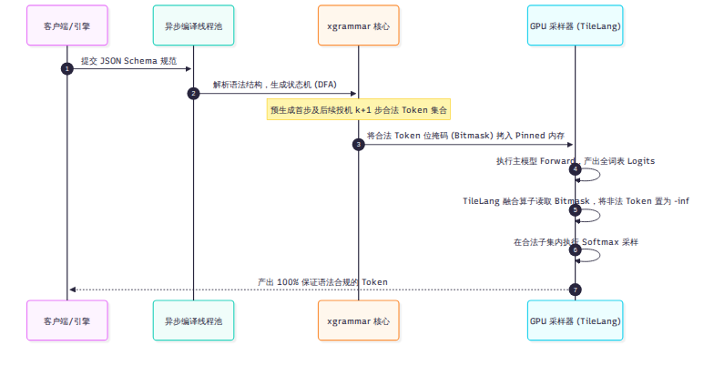
DeepInfer 在 deepinfer/structure_output/
中集成了学术界广泛使用的 xgrammar 语法引擎： -
当用户提交 JSON Schema
或上下文无关文法（CFG）时，引擎后端的异步编译线程池将其解析并编译为确定性有限状态自动机（DFA）。
-
自动机时刻追踪当前已经生成的语法路径，并在微秒级内推导出“当前状态下，全词表中哪一部分
Token 是合法字符，哪一部分 Token 会导致语法破损”。
为了不拖慢 GPU 计算，系统在 CPU 侧生成紧凑的位掩码（Bitmask，每个 Token 对应 1 个 bit），并通过 Pinned 锁页内存高效下发。 - 在配合投机解码运行时，自动机甚至会预先计算出未来 步的所有潜在合法掩码。一旦发生投机拒绝，自动机能够精准执行状态回滚（Rollback）。 - GPU 在采样前，调用专用 TileLang 算子直接读取 Bitmask，就地将所有非法 Token 的未归一化对数概率（Logits）强行写为 。
在经过这一步物理掩码过滤后，非法 Token 的发生概率被绝对清零，从根本上杜绝了括号不匹配、字段缺失等模型幻觉。
推理系统在经历了激进的 FP4 量化、SWA 有界截断以及算子融合后，如何向用户自证“这套系统输出的结果在精度上没有被跑坏”？
在 tests/models/offline_decode_ppl.json 中，DeepSeek
固化了一组极为严苛的数值指纹： - 覆盖 2 套硬件平台（NVIDIA 与 昇腾）、2
类典型负载、2 个 DP Rank，共计 60 个单精度浮点数基准值。 -
在执行基线回归测试（test_kl.py）时，系统要求计算出的
Kullback-Leibler 散度满足
max_kl == 0.0，这意味着不仅生成文本必须相同，每一个 Token
的前向 Logits 必须做到逐 bit 级别的浮点全等。
在 eval/ 目录下，DeepSeek
提供了完整的主流严苛数学与逻辑评测运行流水线。在官方基准测试中，V4.1-Flash
在开启标准优化模式下测得了极高水准的学术分数： - AIME
数学竞赛：99.9 分 - GPQA 专家级综合问答：93.4
分 - HLE-Full（Humanity’s Last Exam）：42.6 分
需要客观指出的是：这组顶尖分数是在开启 DSpark 变长验证且关闭批不变模式（即追求最高吞吐的极速生产路径）下实测得到的，反映了模型在生产常规状态下的真实智力上限。
至此，我们已经剖析完了单节点执行引擎内部的所有核心技术。但在数据中心里，是谁在给这些节点投喂数据？是谁在管理那跨越数天的海量 KV Cache？下一章，我们将正式揭秘 DeepSeek 生产体系中“没有开源的那一半”。
本章内容全部整理自 DeepSeek
官方技术文档（doc/inference_deployment_qa.md）及官方知乎长文披露。本章所讨论的四级负载均衡器、外置
3FS 存储集群与动态容错体系在当前的开源 DeepInfer
仓库中均未包含源码。开源代码仅预留了相关的状态流转插槽与钩子函数。
很多技术团队在研读 DeepInfer 源码时容易产生一个错觉：以为只要把开源仓库编译好，就能立刻在自己的服务器上支撑起千万级的高并发流量。
然而，真实的工业级推理系统是一个庞大的系统工程。DeepInfer 开源的仅仅是单节点的“动力核心”，而真正支撑起每天 155 万亿 token 运转、让成百上千个 GPU 超节点井然有序协作的“中枢神经系统”与“外存循环系统”，依然深藏在 DeepSeek 的数据中心高墙之内。本章将走出引擎单机边界，深度解密这套未开源的大规模生产基础设施。
在由上万张计算卡组成的数据中心里，单一大一统的反向代理（如 Nginx、Envoy 或 HAProxy）面对大模型推理流量会彻底失效。因为长文本 Prefill 需要海量浮点算力，流式 Decode 极度消耗显存带宽，而多模态图像处理则完全受限于卷积与小矩阵吞吐。
DeepSeek 在集群入口处构筑了分工极其严密的“四级负载均衡”治理体系：
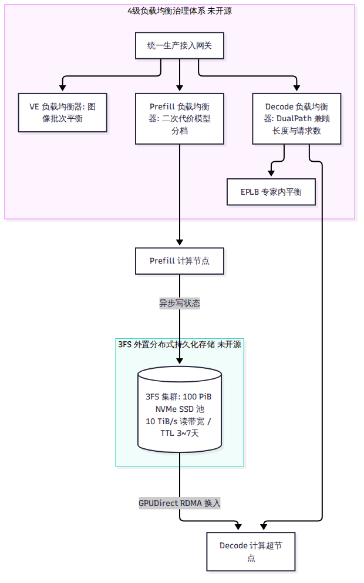
在处理长达 32K 或 128K 的长 Prompt 时，注意力的浮点计算量随着输入长度 的增长呈二次方爆炸（）。一个 64K 的长文本请求，其消耗的计算资源可能相当于几百个短查询的总和。
为了在毫秒级内评估一个请求对 GPU 的真实压迫，Prefill 负载均衡器引入了二次代价模型：
其中 代表本次请求需要计算的新 Token 数量，而 代表命中历史前缀的 Token 数量（已缓存部分仅需参与交叉注意力，无须自注意力二次方全量前向）。
调度器维护一个动态的单节点算力配额上限（compute_quota_limit，通常上限配置为
32,768 个等效 Token 算力）。 -
调度器以此模型求解最优请求切片，确保送入同一台 Prefill
机器的批次总计算量严格处于该配额之内。 -
在机内多个数据并行（DP）节点之间，各卡通过一次极轻量的 MIN
All-Reduce
集合通信，迅速同步当前批次的最大算力承受度，确保批次步频绝对整齐。
正如我们在第 6 章所澄清的：开源版代码中由于剥离了外部调度器，并未包含这一套在线求解器，而是回退到了基于上下文长度和 CP 粒度的启发式切分。
在传统的推理架构中，为了复用前缀缓存，系统通常采用“前缀亲和性路由（Affinity Routing）”：用户 A 的会话之前在哪台机器上跑，后续请求就必须死死绑定到那台机器上。
这种设计在超大规模集群中会导致致命的灾难：某些存放了爆款公共前缀（如热门系统提示词或长文档）的节点被活活打爆，而其他没有缓存的节点却只能闲置。
DeepSeek 彻底摒弃了亲和性路由的束缚，建设了一套独立于计算集群之外的巨型分布式文件系统——3FS（Fire-Flyer File System）。 - 海量容量与极速吞吐：整个存储池由约 100 PiB（佩字节）的高性能 NVMe SSD 固态硬盘阵列构成，提供超过 10 TiB/s 的极限聚合读取带宽 与 850 GiB/s 的高速写入带宽。 - 超长生命周期留存：系统对缓存设置了惊人的有效生存周期（TTL）——普通的日常对话会话（Chat）缓存保留 7 天；计算密集的自主智能体（Agent）会话保留 3 天。 - 前缀路由解耦：由于所有块状 KV Cache 全部实时持久化存放在 3FS 共享池中，任何一个新到达的请求，可以被派发给全数据中心任意一台空闲的 Prefill 机器，也可以被指派给任意一个空闲的 Decode 超节点。计算节点直接通过网络按需拉取前缀块，实现了彻底的调度自由。
从外部网络存储向 GPU 搬运数据，传统的经典路径是：存储网络 → 主机内存（Host RAM） → PCIe 总线 → GPU 显存（Device HBM）。这种通过 CPU 内存中转的双跳机制，在大模型推理的微秒级世界中是完全不可接受的。
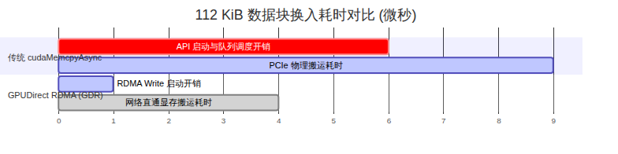
cudaMemcpyAsync 会被抛弃？引用 ACM SIGCOMM ’26 录用论文
DualPath（arXiv:2602.21548）的实测数据： - 在现代服务器上，单次发起
cudaMemcpyAsync API 调用的驱动和队列提交开销本身就需要
5 到 7
微秒（）。
- 而在 400 Gbps 的高速网络环境下，物理传输一个标准的 112 KiB KV
数据块，实际耗时仅仅只需 2.87 微秒！ -
换言之，启动拷贝操作的时间，居然是物理搬运数据时间的整整两倍！
为了打破这一瓶颈，DeepSeek 在底层采用了 GPUDirect RDMA（GDR）技术： - 网络接口卡（NIC）直接越过 CPU 与操作系统内核，在网卡芯片与 GPU 显存之间建立直接 DMA 总线通道。 - 借助网卡硬件的门铃批处理（Doorbell Batching）机制，网络直通写入的单次提交开销被暴力压缩到了 1 微秒以内。外部 3FS 中的块状 KV 数据直接以近乎物理线速的高吞吐，“直捣黄龙”灌入 GPU 的 HBM 显存。
在 Decode 阶段，一个超节点由 64 到 128 张顶级计算卡组成，卡间通过高带宽 NVLink 深度咬合。任何一个有分布式运维经验的工程师都知道：机器越多，发生硬件单点故障的概率越高。
如果在 64 张卡中有一张卡的显存出现硬件纠错重试（ECC），或者某根 NVLink 线缆发生抖动，整个超节点的前向循环就会陷入死锁。
DeepSeek 的弹性容错体系并没有试图去攻克“如何在几毫秒内原地热修复一张故障 GPU”这一不可能的物理命题，而是从业务架构层面降维打击： 1. 常态化冗余配额：集群在任何时刻都维持 5% 到 10% 的空闲备用算力超节点。 2. 请求级快速逃生（Request-Level Rerouting）：一旦健康检查服务检测到某个 64 卡超节点发生心跳丢步或死锁，网关不会等待该节点自愈，而是立刻向客户端屏蔽底层异常，直接将该请求在 3FS 中的历史状态句柄重定向指派给另一个处于待命状态的备用超节点。 3. 节点粗粒度降级退出：发生故障的整组超节点被整体下线，交由后台自愈脚本执行冷复位或硬件诊断，从而彻底切断了局部硬件故障波及全网用户体验的链条。
看完了 DeepSeek 的完整生产图景，现在我们可以回答全书最受瞩目、也是行业内争论最激烈的问题：同台竞技面对 V4.1-Flash，DeepInfer 与当今最主流的通用引擎 vLLM、SGLang 到底有何异同？我们该如何抉择？ 下一章，我们将展开全书最大维度的横向大对比。
在大模型推理系统领域，vLLM 与 SGLang 无疑是当今全球开源社区最主流的两大通用框架。当 DeepSeek 带着自研的 DeepInfer 杀入开源竞技场并公布惊人的吞吐数字时，技术社区立刻爆发了剧烈的争论：有人称其“彻底终结了通用推理框架”，也有人质疑其“只是换皮与套壳”。
事实究竟如何？面对同一个 DeepSeek-V4.1-Flash 模型，DeepInfer、vLLM 和 SGLang 到底差在哪里？三者有何血统渊源与算子共享？企业与技术团队在落地时又该如何科学抉择？本章将剥离一切非黑即白的立场，从代码血统、架构哲学、技术机制到性能边界展开全维度的深度大横评。
要读懂三者的异同，首先必须看清它们在设计之初所背负的根本使命差异：这是“专用特化赛车”与“全地形越野车”的路线抉择。
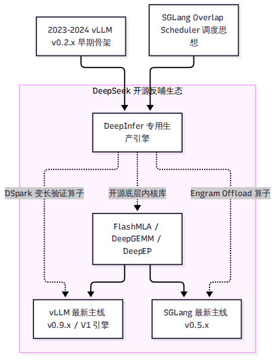
vLLM 与 SGLang 的定位是通用型推理服务底座。 - 它们必须支持成百上千个不同结构的模型（LLaMA、Qwen、Mistral、Gemma、Mixtral 等）。 - 它们必须支持跨厂商、跨代际的丰富硬件生态（NVIDIA 各代显卡、AMD ROCm、Intel Gaudi、各种国产 NPU 甚至纯 CPU）。 - 它们必须提供开箱即用的多租户 OpenAI 兼容 API、动态 LoRA 适配器加载以及复杂的安全审计策略。
为了这份通用性，框架必须建立极其庞大且严密的分层抽象体系（如通用模型注册表、通用的张量并行与流水线抽象、通用的缓存管理器）。这些抽象层在赋予框架极强通用性的同时，也无可避免地在底层带来了微秒级的胶水开销与内存间接寻址成本。
DeepInfer 的定位是单一生产模型的物理性能压榨器。 - 它从诞生起就只服务 DeepSeek-V4.1-Flash 这一个模型。 - 它坚决放弃对其他任何开源模型的兼容，甚至把 128 滑动窗口、第 20 层 KV 跨层投影、384 专家拓扑与 134 槽位直接硬编码进引擎调度器与算子内部。 - 它彻底剥离了在线 API 服务、动态 LoRA、多种量化方案以及通用的模型注册机制。
这种极端放弃换来的是“零抽象开销”的极致轻盈：CPU 调度没有多余的分支判断，GPU 显存无需动态元数据计算，算子完全针对特定的 Tensor 维度深度融合。
技术社区最关心的问题之一：DeepInfer 和 vLLM 到底是什么关系？它算不算是对 vLLM 的“套壳”或“抄袭”？
根据第三波调研（R15）中对本地源码与 vLLM 历史 13 个 Release Tag
的详细代码指纹比对： - 在 DeepInfer 的 222 个 Python
文件中，恰好有 23 个文件的第二行明确注明了
"Derived from vLLM; modified by DeepSeek."（占一阶
Python 总代码量的 12.2%）。 - 通过对这 23 个骨架文件与 vLLM
历史各版本的相似度进行滑动比对发现：代码相似度在 vLLM
v0.2.7 版本（2024 年 1
月前后）达到顶峰，而在此之后，随着 vLLM 逐步向 v0.4、v0.6
以及最新的 V1 引擎演进，两者代码相似度发生断崖式下跌，到最新 main
分支时相似度已不足 2.3%。 - 独立 API 证据（如
create_engine_configs 4
元组、profile_num_available_blocks
签名）无可辩驳地证明：DeepInfer 确实分叉（Fork）自 2023 年末至
2024 年初的早期 vLLM v0.2.x 时代。
然而，如果据此将 DeepInfer 贬低为“简单套壳”，同样严重违背了代码事实。
对 4 个最核心的派生文件做代码逐行对比，展示了 DeepSeek
极其激进的“换芯”手术： - llm_engine.py（相似度仅
16%）：原版的纯 Python 调度循环被连根拔除，替换为通过 pybind11
深度绑定的 C++ csrc/engine/ 调度核心，引入了完整的 ZOS
异步流水线状态机。 - cache_engine.py（相似度仅
9%）：通用的 PagedAttention 显存管理被全部推翻，替换为服务于
890 字节块状 KV 与 StateBlock 134 槽位的特化显存布局。 -
worker.py 与 model_runner.py（相似度仅
5% 与 4%）：通用的前向逻辑被全量重写，换上了基于 Token
档位录制的 CUDA Graph 与 TileLang 镜像双硬件算子。
可以说：DeepInfer 仅仅保留了早期 vLLM 的命令行参数解析、采样参数定义与请求生命周期的外部接口外壳，而驱动引擎计算的调度心脏、显存骨骼与执行算子，已经被彻底自研重构。
我们从推理引擎最核心的六大技术维度，对三大引擎的最新实现机制展开横向解构：
| 技术维度 | DeepInfer（Commit 9bd9cf2） | vLLM（Commit 2d40c06, V1 架构） | SGLang（Commit 79eb10e, v0.5.x） | 架构差异成因与技术解读 |
|---|---|---|---|---|
| 支持模型与硬件 | 仅支持 V4.1-Flash 单模型；仅支持 NVIDIA SM100 与华为昇腾 950。 | 支持数百款开源模型；广泛支持 NVIDIA、AMD ROCm、Intel、各类 NPU。 | 支持主流开源模型；全面支持 NVIDIA、AMD、昇腾等主流生态。 | 专用极致特化 vs 通用全生态兼容。 |
| 调度机制 | C++ ZOS 零开销异步调度；GPU 就地修正验证长度；无 GIL 开销。 | V1 引擎 AsyncScheduler；通过 -1 占位 Token
推进流水线重叠。 |
原生 Overlap Scheduler；采用调度/前向/拷贝三流事件驱动与
FutureMap。 |
思路同源，但 DeepInfer 与投机解码深度对齐程度最高。 |
| KV Cache 与前缀复用 | 890 B/token 极限压缩；128 token 硬对齐；外置 3FS 共享池，引擎内无自动 Hash 树。 | PagedAttention 通用分页；基于父哈希+块内容的链式 APC 自动前缀缓存。 | RadixAttention 前缀树（Rust 核心）；三级存储分级体系（HiCache）。 | DeepInfer 依赖云端 3FS 统一解耦，框架强调单机自适应前缀发现。 |
| 分布式并行策略 | 纯 Attention-DP + MoE-EP（Wide-EP 64–128）；坚决不用 TP；支持 Mirror CP。 | 支持 TP、PP、DP-Attention、DEP（双层专家并行）；全面支持各类混合并行。 | 支持 TP、PP、DP-Attention；较早为 DeepSeek 模型开创并优化 DPA。 | 通用框架兼顾单机与小集群，DeepInfer 完全针对超节点定制。 |
| 投机解码实现 | 内置 DFlash 3 层非因果草稿头；DSpark 基于置信度的期望吞吐动态裁剪。 | 支持 EAGLE-1/2、MTP（28种变体）；通过 PR 逐步跟进 Adaptive 变长验证。 | 支持 EAGLE、MTP；针对 V4.1-Flash 提供 DSpark 延迟校正镜像。 | DeepInfer 实现了草稿结构与验证裁决的最短路径闭环。 |
| 正确性与合规保障 | 原生批不变（关闭 split-KV/split-K）；绝对位置 RNG 定序；xgrammar 预编译掩码。 | 支持种子固定；通过 Outlines、xgrammar 等多种后端支持结构化输出。 | 具备确定性采样；采用轻量级自动机支持高吞吐结构化输出。 | DeepInfer 在批不变上做到了浮点逐位全等（Bitwise Exact）。 |
2026 年 10 月 21 日，在 DeepInfer 开源后不久，vLLM 官方 X 账号（@vllm_project）发布了一条引爆社区的声明： > “vLLM decode throughput on GB200 is already within 6% of DeepInfer’s published numbers!” > （vLLM 在 GB200 上的解码吞吐量，已经达到了 DeepInfer 公布数字的 6% 以内！）
这个声明引发了大量技术讨论：“既然差距只有 6%，那 DeepInfer 还有什么意义？”
严肃的技术分析绝不能脱离测试前置条件。深入查证第三波调研（R13 与 R16）的证据链后，我们必须揭开这“6%”背后的真实物理边界：
结论非常明确：没有任何一个引擎能够在所有硬件、所有并发和所有拓扑下通赢。脱离了卡数规模（单机 8 卡 vs 64 卡超节点）、脱离了前缀命中率（零缓存 vs 3FS 高命中）、脱离了并发工作点谈论“谁比谁快百分之几”，在系统工程上是毫无意义的。
大模型开源社区并不是非此即彼的零和博弈，而是一场精彩的“技术反哺与双向奔赴”：
仔细观察三大框架的技术栈，你会发现一个有趣的现象：DeepSeek
实际上成为了当今主流推理框架的共同底座。 - vLLM 深度集成了
DeepSeek 开源的 FlashMLA、DeepGEMM 和
DeepEP。 - SGLang
同样将这些算子作为其高性能后端的核心组件。 - 在 DeepInfer 开源不到 48
小时内，vLLM 社区就提交了 RFC #62839 与 PR #62840，直接引用 DeepInfer
的代码行数，吸纳其 DSpark 置信度头 TileLang 算子。
对于面临真实业务落地的技术决策者与工程师，我们梳理了以下清晰的决策逻辑：
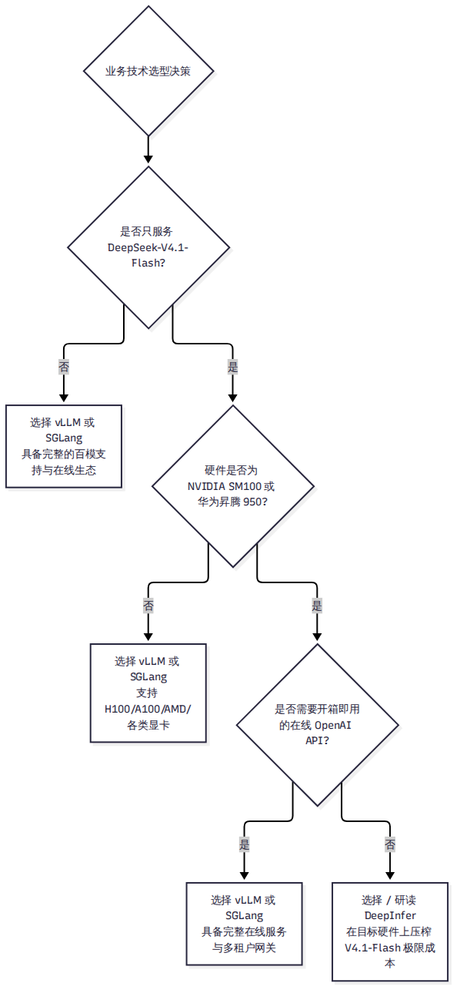
站在这个高度审视完所有技术细节之后，我们需要对整个系统进行一次冷静的哲学复盘。下一章，我们将探讨 DeepInfer 的长处与局限，以及它所折射出的大模型推理行业未来趋势。
当技术褪去初期的神秘光环，一个工程系统的真正历史价值便清晰地浮现出来。
DeepInfer 的开源是大模型系统演进史上一个极具象征意义的事件。它不仅向外界展示了一家顶级 AI 原生企业如何用软硬件协同工程将推理成本压低至常人难以想象的区间，同时也极其坦率地暴露了工业界自用特化系统走向开源时所固有的天然局限。本章将对 DeepInfer 展开客观的综合评价，总结其开创性的工程长处，正视其高墙之内的客观短板，并对大模型推理系统的未来演进趋势提出我们的研判。
如果将 DeepInfer 放在整个计算系统发展史的坐标系中审视，它的最大贡献在于：它以极其激进的姿态，打破了长期以来模型算法团队与底层系统工程团队之间的“无形隔离墙”。
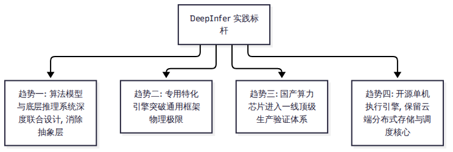
doc/inference_deployment_qa.md
的数十个问答到知乎专栏的长文复盘，DeepSeek 极其坦白地公开了其内部关于
P/D 分离比例、3FS 存储容量、GDR 时延微秒级对比、EPLB 负载不均衡度以及
FlashMLA 相比内部版缺少 SASS
调优等一系列关键工程细节。这种毫不遮掩、实事求是的工程师文化，对整个技术社区反思推理系统设计带来了深远启发。然而，正如我们在全书反复强调的，赞赏不能掩盖短板。对于绝大多数中小型技术团队和普通开发者而言，当前的 DeepInfer 是一把被锁在高墙之内的“特种武器”：
import pytest
等未清理的遗留项）。这在一定程度上阻碍了全球国际开源开发者的深度理解与协同贡献（正如
GitHub 上几乎所有提交的 PR 都在忙于修补依赖与硬件报错）。结合 DeepInfer 的实践与主流通用框架的最新动态，我们可以对未来大模型推理系统的技术演进提出四点趋势推断（标为 E 级分析）：
看清了这套系统的过去与未来，面对这样一个庞大而特化的系统，没有 64 张高端 GPU 的我们该如何真正动手研读它？下一章，我们将为读者量身定制一份科学的上手学习与实验指南。
客观声明：本书作者基于公开的官方技术文档、锁定
Commit（9bd9cf2）的完整源码、权重元数据及测试脚本进行了静态研读与部分
CPU 模块验证，未在 64 张英伟达 SM100 或华为昇腾 950
物理集群上进行全流程实机运行。本章的实验设计旨在为没有高端集群的普通开发者提供一条切实可行的低门槛学习路径。
读完前十五章的读者往往会面临一个非常现实的尴尬：DeepInfer 的架构设计极其精妙，但它要求的运行环境（64 张 Blackwell 或昇腾 950）对 99.9% 的工程师和在校学生来说都是遥不可及的天文数字。
没有物理硬件，是不是就只能望洋兴叹？绝对不是。软件工程中最宝贵的往往是架构思维、数据流编排以及代码级的实现技巧。本章将为读者设计一套科学的“无卡研读与动手实验指南”，帮助你在普通笔记本或 CPU 服务器上，真正把这套系统的精髓吸收内化。
在尝试克隆代码前，首先必须破除对运行硬件的侥幸心理：
examples/offline_inference.py
的默认配置（--ep 8），系统的理论最小运行单元是单台配备
8 张全互联顶级计算卡（SM100 或 昇腾 950）的物理服务器。低于 8
卡，专家并行（EP）的通信逻辑将无法完整闭环。deepinfer/engine/llm_engine.py 在初始化时内置了对显卡
TFLOPS 算力档位的硬性断言，在 Hopper（H100/H800）或
Ampere（A100/4090）等常见显卡上执行主程序，会直接抛出
RuntimeError: unknown GPU type 异常。因此，不要试图在不符合条件的普通显卡上去“跑通”它。把精力聚焦在代码研读与模块隔离验证上，才是最明智的学习策略。
面对近 6 万行代码，我们为读者梳理了一条由表及里、循序渐进的“六站式”代码阅读主线：
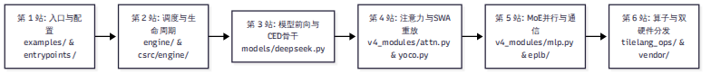
examples/offline_inference.py
→ deepinfer/entrypoints/llm.py →
deepinfer/config.py 与 environ.py。EngineArgs 与 SamplingParams 的结构。deepinfer/engine/llm_engine.py
→ deepinfer/worker/worker.py →
csrc/engine/scheduler.hpp 与 zos.cpp。MetadataZOS 与
remap 映射表在 Python 与 C++ 之间的流转。deepinfer/model_executor/models/deepseek.py
→ decoder_layer.py →
hugging_face/config.py。DeepseekDecoderLayer 如何跑过 40 层，确认第 20
层切分点是如何从 compress_ratios 推导出来的。deepinfer/model_executor/models/v4_modules/attn.py
→ yoco.py →
csrc/engine/prepare_tensor_input_v4.cpp。deepinfer/model_executor/models/v4_modules/mlp.py
→ eplb/policy.py →
parallel_utils/parallel_state.py。deepinfer/model_executor/layers/tilelang_ops/ops.py
→ 对照阅读 cuda/ 与 asc/ 下的同名算子。没有高端显卡，依然有多种方法可以在普通机器上亲自动手实践：
DeepInfer 的很多基础配置模块并不强依赖 GPU 驱动。在纯 CPU 的 Python 3.10+ 环境下，你可以直接执行：
# 进入仓库目录，直接测试环境变量加载与类型转换
python3 -c "
from deepinfer.environ import envs
print('DeepInfer 版本与配置加载成功:')
print(' MTP_VARLEN 默认开关:', envs.DEEPINFER_ENABLE_MTP_VARLEN)
print(' KEEP_TOKENS 默认值:', envs.DEEPINFER_YOCO_PREFILL_KEEP_TOKENS)
"通过阅读 environ.py 中的
_bool、_int
解析逻辑，你可以学习工业级系统如何通过环境变量安全覆盖配置。
yoco_equiv.py 逻辑单元在 examples/yoco/yoco_equiv.py 中，虽然完整的 L2
测试需要多卡并行，但 L1 层的“紧凑张量与全量 Mask
数学等价性校验”在逻辑上是纯数学的。你可以抽取出其中的矩阵展开算法，在本地用
NumPy 复现并验证不同滑动窗口大小下的可见域是否严丝合缝。
这是最能提升系统架构功力的硬核练习： 1. 下载 vLLM v0.2.7
源码与当前最新的 vLLM V1 源码。 2. 挑选
cache_engine.py、llm_engine.py 或
sampler.py。 3. 使用 diff 或 VS Code
的对比窗口，逐行观察 DeepSeek
是如何把通用的代码一步步删减、硬编码、并替换为自研 C++/TileLang
算子的。这种对比能让你最直观地感受到“从通用到专用”的工程取舍。
如果你有幸在支持的测试机上接触到真机环境，或者拿到了他人分享的 PyTorch Profiler 跟踪文件（Trace JSON）：
官方提供了基准压测脚本
examples/benchmark.py。需要特别注意的是： -
在代码中，环境变量 PROFILE
默认是开启的（PROFILE=1）。 -
避坑提示：Profiler
本身会引入微秒级的追踪开销，导致测量出的单步耗时虚高近
50%。正式测量纯吞吐时，必须显式设置
PROFILE=0；只有在诊断算子内部构成时，才开启
PROFILE=1。
将生成的 Trace 文件下载到本地，在 Chrome 浏览器中输入
chrome://tracing 或打开 ui.perfetto.dev
并加载文件，你可以清晰看到 GPU 上的时间线切片： - FlashMLA
Decode
内核：呈现为紧凑的蓝色矩形，耗时通常占整个注意力步的绝大部分。
- DeepEP All-to-All 通信：呈现为位于 MoE
前后的集合通信条，观察它是否与随后的 GEMM 计算实现了良好的时间重叠。 -
Mega MoE 融合块：如果在单机 Scale-Up
域内，你将看到独立的通信与计算块消失了，取而代之的是单个连续打满 SM
的大内核。
全书的技术旅程即将抵达终点。在最后一章中，我们将全书凝聚为 20 个最高频、最尖锐的核心技术问题，为你做最后的系统答疑。
在本书的最后，我们抛开冗长平铺的叙述，把全书在代码、架构、数学与经济学层面的核心争议与关键洞见，浓缩为二十个技术人员最关心、最常讨论的硬核问答。每个回答直奔物理本质，并附有对应正文章节的交叉回指。
答：因为 DeepInfer 的本质不是通用框架，而是一个“专模专用”的单体性能压榨器。为了换取极致吞吐，引擎在代码层面直接写死了该模型的特定常数（128 滑动窗口、第 20 层 KV 投影、384 专家拓扑、134 槽位布局）。支持其他模型意味着必须引入泛化抽象层，而这恰恰违背了其“零抽象开销”的初衷。未来即使支持新模型，也大概率仅限于 DeepSeek 自身同源架构的迭代版本，不会走向支持 LLaMA 等泛化生态。（回指第 2 章、第 14 章）
答：这一说法存在二传报道的信息失真。2025 年 4 月官方的原话是内部系统在没有重大重构的前提下对于社区“公开部署尚不现实（impractical for public deployment）”，当时选择向上游贡献组件。2026 年 10 月开源的 DeepInfer 并没有推翻这一判断——它并未开源难以公开部署的分布式存储与集群调度，而是精明地将开源边界精准收窄为“单机离线执行引擎”，既兑现了回馈开源社区技术栈的承诺，又规避了完整在线生产集群在外部难以落地的问题。（回指第 2 章）
答：核心驱动力是压降单步权重访存流量。V4.1-Flash 拥有 384 个路由专家。在 8 卡（EP8）下，单卡每步需要加载多达 52 个专家的权重，显存带宽被彻底吃光；而在 64 卡宽专家并行（EP64）下，单卡仅需加载 7 个专家，单步显存搬运量暴降 7.43 倍，使单卡解码吞吐提升高达 5% 到 53%。卡数变少，显存访存就会立刻成为压垮吞吐的死穴。（回指第 4 章、第 9 章）
答：主要有两个致命原因：第一，张量并行在每一层前后都需要高频的卡间阻塞式
All-Reduce 通信，在 64–128
卡的大规模超节点中网络同步延迟极其巨大；第二，在 Decode
阶段瓶颈在于单卡加载权重的总量，TP
无法减少全卡总共需要从显存读取的专家参数。因此 DeepSeek
选择了通信开销更优的“Attention 数据并行 + MoE 宽专家并行”。（回指第 4
章、第 9 章）
答：代码中通过 prepare_cp_mirror.py
实现了精巧的 Mirror
CP，但官方部署问答明确说明生产中暂不启用。原因在于：生产环境通过第 8
章的 SWA 有界重放，已经把 Decoder 侧的 Prefill 算力砍掉了 98.6%，总
Prefill 耗时本身已经极低；在当前序列长度下，引入跨节点 CP
通信所带来的额外网络开销，已经超过了它能分摊的微小算力收益。（回指第 4
章、第 8 章、第 9 章）
答：这两个数字真实反映了顶级工业集群的峰值经济效益，但带有极严苛的前提条件：它建立在全系统 7×24 小时满载、依赖 3FS 维持极高前缀命中率、全球超节点互联以及官方折算谷时电价的基础上。中小团队在小规模集群、零前缀缓存的离线测试下，绝不可能直接复现出这一经济学奇迹。（回指第 2 章、第 16 章）
答：关键在于“训练与系统的先验协同”。DeepSeek 在模型后训练（Post-Training）阶段，就已经在数据流水线中人工注入了有界截断的模拟分布，强迫模型学会通过第 20 层的全局隐藏状态来把握宏观语义。vLLM 官方博客与社区在 GSM8K 和 GPQA 上的严谨横评证实，开启有界截断与全量计算的精度差异完全处于 1.5 倍标准统计误差之内。（回指第 3 章、第 8 章）
答：极为划算。因为在实际生产中，热门的系统提示词（System Prompt）、长文档上下文或复杂 Agent 的思考前缀会被成千上万次重复调用。100 PiB 的 NVMe SSD 属于一次性硬件资产，而如果不存这些 KV，每次请求都要在 GPU 上重新烧一遍昂贵的 Prefill 算力和电力。用廉价的固态硬盘换取极其昂贵的 GPU 算力释放，在大规模生产中具有压倒性的成本优势。（回指第 4 章、第 7 章、第 13 章）
答：为了实现“调度解耦与前缀自由”。单机内存容量有限，如果将前缀死死绑在特定机器上，系统就必须采用“前缀亲和性路由”，极易导致存放了热门前缀的机器被瞬间打爆，而其他机器闲置。通过 100 PiB 的外置 3FS 共享池，全网任意一台机器都可以随时认领任意请求并以 10 TiB/s 带宽换入状态，彻底消除了集群冷热不均。（回指第 13 章）
答：不是。DeepSeek
在官方文档中毫不避讳地指出，其异步调度思路直接参考了 SGLang 的 Overlap
Scheduler 与清华大学的 NanoFlow 论文。DeepInfer
的核心突破不在于发明了重叠流水线，而在于解决了异步调度与投机解码变长验证之间的严重冲突（通过
GPU TileLang 算子就地动态重配 seqlens_q）。（回指第 6
章、第 14 章）
答：DeepInfer 确实分叉（Fork）自 2024 年初的 vLLM v0.2.x 早期版本，仓库中保留了 23 个标有版权致谢的文件外壳（占比约 12.2%）。但在此之后，DeepSeek 将调度器全量下沉为 C++，将 PagedAttention 全量重构为 890 字节块状显存管理，并换装了全套 TileLang 算子。这是一种“保留外部接口壳、彻底自研换芯”的工程演进，既有对上游开源成果的客观继承，也有极高含金量的深度自研。（回指第 5 章、第 14 章、第 15 章）
答：当然有。首先，vLLM 的“6%”声明缺少具体的 GPU 数量与网络拓扑参数，在小规模单机实测中双方互有胜负；其次，DeepInfer 的最大价值在于它提供了一座毫无保留的“物理实现参考坐标系”——正是因为 DeepInfer 开源并公布了代码，vLLM 和 SGLang 才能在 48 小时内迅速跟进吸收其 DSpark 与 Engram 优化。它是推着通用社区往前走的催化剂。（回指第 14 章）
答：主要差距在两个层面：宏观层面，开源版剥离了外部的 3FS 存储驱动、P/D 分离路由网关与四级负载均衡器；微观算子层面，开源版 FlashMLA 相比内部自用版缺少了一层专属的手工 SASS 指令调度优化，导致解码内核慢 5% 到 10%，但端到端整机吞吐差距在 5% 以内。（回指第 2 章、第 11 章、第 13 章）
答：绝大多数核心特性完全对齐（全 40 层 MoE、有界重放、890B KV、DSpark 变长验证在两套芯片上均有专属镜像算子）。主要差异在于微架构细节：英伟达版本利用 TMA 与 Warp-Specialization 实现了更极致的 Mega MoE 单内核融合，而昇腾版本受限于达芬奇核心特性，缺失了部分融合特性，部分算子回退为离散实现。（回指第 11 章）
答：因为浮点数加法不满足结合律，动态批大小改变了张量规约的累加顺序，会导致同样的输入在不同并发下输出不同的文本。为了满足严苛数学竞赛（如 AIME）评测与金融审计的绝对复现，DeepInfer 通过强制关闭 split-KV、split-K 和多重归约实现了批不变。代价是牺牲了部分算子并发度，整体推理速度会变慢。（回指第 12 章）
答：它解决了输入清洗与流式解析的高性能安全闭环问题。在生产中，直接接收原始文本极易遭受特殊
Token
注入攻击；而在模型生成时，如何逐字节平滑剥离思考标签（<think>）需要极高的效率。deepseek-recipe
用纯 Rust 打造了包含 11 状态 KMP
状态机的极速解析器，并支持分段多线程并行编码，是生产网关不可或缺的防线。（回指第
2 章、第 13 章）
答：最难攻关的是分布式 KV Cache 状态的网络流转与一致性保障。开源版仅提供了单节点内存中的块分配接口，要做到跨节点让 Prefill 机器算完立刻移交给 Decode 机器，你必须自行实现类似于 3FS 的高速网络存储同步层，并解决多节点在微秒级内的健康检查与死锁重路由。（回指第 13 章）
答：最大的启发是跳出分层抽象的思维定势。不要把模型当成黑盒，不要把推理框架当成不可修改的黑盒。当你发现业务中某类模型的注意力具有局部性时，你可以尝试截断；当你发现异步调度会引起状态冲突时，你可以把冲突判断下沉到 GPU 算子内部解决。这种穿透全栈的跨层优化思维，能迁移到任何高性能系统的研发中。（回指第 15 章、第 16 章）
答：未来模型若引入更激进的非注意力结构（如长程状态空间 Mamba、更深度的跨层参数共享）或全新的自适应动态专家路由，推理引擎的显存管理将从“固定块结构”走向更加彻底的“连续流式状态池”，调度器也将进一步下沉到网卡与 GPU 硬件内部，软件胶水层将被进一步压缩。（回指第 15 章）
答：将目光从“跑通整个工程”转向“拆解局部模块”。你可以将它的 128 对齐显存管理思路借鉴到自己的本地推理中；你可以参考其 DSpark 期望吞吐求解模型优化通用 vLLM 上的投机参数；你也可以研读其 TileLang 双硬件镜像算子，学习如何优雅地编写跨芯片的高性能内核。（回指第 16 章）
| 问题编号 | 核心主题 | 关键结论速查 | 回指深度章节 |
|---|---|---|---|
| Q1–Q2 | 定位与开源动机 | 专模专用；开源收窄为离线执行核心，保留云端基础设施 | 第 2、14 章 |
| Q3–Q5 | 分布式切分策略 | Wide-EP64 访存降 7.43 倍；TP 高频阻塞不可取；Mirror CP 消除倾斜 | 第 4、8、9 章 |
| Q6–Q9 | 生产与存储经济学 | 155万亿建立在全满载基础；3FS 7天留存与 GDR 赋予前缀自由 | 第 4、7、13 章 |
| Q10–Q12 | 与 vLLM/SGLang 关系 | 早期 vLLM 分叉换芯；共享算子底座；6% 缺少对齐前提 | 第 5、14、15 章 |
| Q13–Q14 | 双硬件与内部版差距 | 昇腾全功能深度落地；FlashMLA 缺 SASS 致单核慢 5-10%、端到端 <5% | 第 2、11、13 章 |
| Q15–Q17 | 正确性与在线工程拼图 | 批不变牺牲速度消除浮点非结合误差；商用最难在分布式 KV 流转 | 第 12、13 章 |
| Q18–Q20 | 个人学习与未来演进 | 学习跨层击穿思维；算法与系统深度协同是大势所趋 | 第 15、16 章 |
至此，关于 DeepInfer 的全景技术长卷已经完整展开。从宏观的百万亿 token 生产架构，到底层的 TMA 汇编微码；从激进的 890 字节 KV 压缩，到神来之笔的 SWA 有界重放——这套系统向我们生动展示了一家前沿 AI 企业在算力物理极限面前所爆发出的惊人工程创造力。
随后的附录部分为你准备了详实的术语表、全量环境变量速查表、主要源码索引与参考资料，供你在未来的读码与系统研发过程中随时翻阅查证。
本书涉及大量源自前沿学术界、工程界以及 DeepSeek 内部特化的专业技术术语。为便于读者翻阅，下表按拼音字母顺序整理了全书核心术语的标准中英文名称、缩写、一句话物理定义及首次详细讨论章节：
| 术语（中文/英文/缩写） | 物理本质与一句话定义 | 首次出现章节 |
|---|---|---|
| 批不变推理（Batch-Invariant Inference） | 消除浮点规约顺序对批大小依赖的确定性推理模式，确保单请求输出完全独立于同批其他请求。 | 第 12 章 |
| 超连接（Hyper-Connections，mHC） | 将传统单残差流拓宽为多子流（如 4 流）并在子层前后执行高频混洗的深度网络连接架构。 | 第 3 章 |
| 草稿模型（Draft Model） | 投机解码中负责先行低成本预测未来若干候选 Token 的轻量级前向模块（如 DFlash）。 | 第 1 章、第 10 章 |
| 多头潜在注意力（Multi-Head Latent Attention，MLA） | 将 Key 与 Value 投影至低维共享潜在空间（Latent Vector）的高压缩比注意力机制。 | 第 1 章、第 3 章 |
| 滑动窗口注意力（Sliding Window Attention，SWA） | 每一个 Token 仅关注自身前文固定局部窗口（如 128 Token）的受限自注意力机制。 | 第 3 章、第 8 章 |
| 镜像上下文并行（Mirror Context Parallelism，Mirror CP） | 将长序列首尾两段对偶绑定至同一个计算节点，以平抑因果自注意力下三角计算倾斜的并行方案。 | 第 9 章 |
| 宽专家并行（Wide Expert Parallelism，Wide-EP） | 在 Decode 阶段跨数十张甚至上百张卡（如 EP64–128）极度切分 MoE 专家以成倍摊薄权重访存的架构。 | 第 4 章、第 9 章 |
| 连续批处理（Continuous Batching） | 打破请求强绑定、在单步迭代级别动态纳管请求进出以彻底消除尾部算力气泡的调度机制。 | 第 1 章 |
| 首字延迟（Time to First Token，TTFT） | 客户端从发送 Prompt 到收到大语言模型输出的第一个 Token 所经历的时间（由 Prefill 决定）。 | 第 1 章 |
| 微秒级直通显存（GPUDirect RDMA，GDR） | 网络接口卡越过 CPU 内存中转，直接通过 PCIe 总线与 GPU 显存执行零拷贝 DMA 传输的硬件技术。 | 第 13 章 |
| 有界重放（Bounded Replay） | 在状态缺失或跨层时，仅重算末尾固定窗口（128 Token）并强制截断历史以换取常数开销的近似重构机制。 | 第 8 章 |
| 预填充阶段（Prefill Phase） | 推理引擎一次性处理用户输入 Prompt 的大矩阵计算阶段，本质属于计算密集型（Compute-Bound）。 | 第 1 章 |
| 解码阶段（Decode Phase） | 推理引擎逐字自回归生成回答的向量矩阵计算阶段，本质属于显存带宽受限型（Memory-Bound）。 | 第 1 章 |
| 专家负载均衡器（Expert Parallelism Load Balancer，EPLB） | 监控 MoE 各专家在线命中率，通过冗余副本与两级贪心装箱动态消解热点倾斜的调度算法。 | 第 9 章 |
| 字间延迟（Time Between Tokens，TBT） | 模型在自回归流式生成过程中，相邻两个输出 Token 之间的物理时间间隔（由 Decode 决定）。 | 第 1 章 |
| 置信度头（Confidence Head） | DFlash 模块末端用于预测每个草稿 Token 被主模型接纳概率的轻量级单层标量投影网络。 | 第 3 章、第 10 章 |
| 装箱策略（Bin-Packing Policy） | EPLB 中以最小化全局单卡最大负载为目标，将热门专家冗余实例安插进空闲卡的核心组合优化算法。 | 第 9 章 |
| 阻断式注入防护（Special Token Sanitization） | 在分词阶段强制剥离新增词表中的控制字符，防止外部恶意输入构造提示词越狱的安全防护技术。 | 第 2 章、第 13 章 |
| 3FS 分布式文件系统（Fire-Flyer File System） | DeepSeek 自研的高性能分布式闪存存储集群，为上万计算节点提供数十 TiB/s 级别的 KV 共享池。 | 第 4 章、第 13 章 |
| CED 架构（Compress-Encoder-Decoder） | 将全模型划分为前 20 层 Encoder 与后 20 层 Decoder、由第 20 层一次性投影共享块状 KV 的骨干架构。 | 第 3 章、第 8 章 |
| DFlash 模块 | 挂载在主干顶部的 3 个非因果轻量草稿层，一次并行前向产出 5 个候选 Token 的投机生成器。 | 第 3 章、第 10 章 |
| DSpark 算法 | 结合置信度头存活率与 GPU 实测延迟曲线，动态为每个请求求解最优验证长度的投机调度算法。 | 第 10 章 |
| Engram 嵌入增强 | 依托外挂的 1.57 TB 静态多哈希 N-gram 查找表，直接提取固定词组语义的低计算复杂度旁路模块。 | 第 3 章 |
| TileLang 语言 | 一种将高级 Python 语法自动编译优化为英伟达 CUDA 与华为昇腾达芬奇汇编的领域特定开发语言。 | 第 5 章、第 11 章 |
| YOCO 架构（You Only Cache Once） | Decoder 层不持有独立块状 KV，而是完全别名复用 Encoder 隐状态投影输出的跨层缓存复用设计。 | 第 3 章、第 8 章 |
| ZOS 调度器（Zero-Overhead Scheduling） | CPU 提前排定下一步前向计算并由 GPU 就地补全未知状态的零开销异步批处理流水线机制。 | 第 5 章、第 6 章 |
DeepInfer
内部包含大量的底层性能调优参数，绝大多数参数既可以通过命令行
EngineArgs 传入，也可以通过特定的 DEEPINFER_*
环境变量直接硬覆盖。下表系统整理了仓库中定义的 64
项核心环境变量及其物理语义：
deepinfer/environ.py 严格整理）| 环境变量名称 | 数据类型与默认值 | 物理功能与生效模块 | 源码定义与调用位置 |
|---|---|---|---|
DEEPINFER_BATCH_INVARIANT |
bool (默认 0) |
开启批不变模式，禁用 split-KV/split-K，保证输出完全独立于同批其他请求。 | environ.py:34, sparse_decode.cpp |
DEEPINFER_ENABLE_MTP_VARLEN |
bool (默认 1) |
开启 DSpark 变长验证投机调度；关闭后回退至固定长度验证。 | environ.py:46, mtp_varlen.hpp |
DEEPINFER_USE_NEXTN_DECODE |
int (默认 5) |
投机解码最大草稿 Token 长度（V4.1-Flash 硬编码建议为 5）。 | environ.py:58, dflash.py |
DEEPINFER_YOCO_PREFILL_KEEP_TOKENS |
int (默认 140) |
Decoder 层 Prefill 有界重放保留的末尾 Token 数量（）。 | environ.py:82,
prepare_tensor_input_v4.cpp |
DEEPINFER_YOCO_PREFILL_TRUNCATION_MODE |
str (默认 "compact") |
有界重放的计算模式（"compact"
紧凑切除无用行，"mask" 掩码保留）。 |
environ.py:86, attn.py |
DEEPINFER_ENABLE_ZOS |
bool (默认 1) |
开启 ZOS 零开销异步调度流水线；关闭后回退至经典同步串行执行。 | environ.py:28, worker.py |
DEEPINFER_FORCE_LOAD_BALANCE |
bool (默认 0) |
强制开启 EPLB 专家动态重平衡，定期扫描命中率并搬运权重。 | environ.py:114, eplb/policy.py |
DEEPINFER_EPLB_INTERVAL |
int (默认 100) |
EPLB 触发动态重平衡的计算步（Step）间隔周期。 | environ.py:118, eplb/policy.py |
DEEPINFER_ACCELERATOR |
str (默认自动探测) |
底层算子加速后端选择（"cuda" 或
"ascend"），决定编译产物目录。 |
environ.py:12, platform.py |
DEEPINFER_LOG_LEVEL |
str (默认 "INFO") |
全局日志输出级别（"DEBUG", "INFO",
"WARNING", "ERROR"）。 |
environ.py:18, logger.py |
DEEPINFER_USE_TILELANG_KERNEL |
bool (默认 1) |
是否优先调用 TileLang 编译出的融合高性能算子；关闭后回退 PyTorch。 | environ.py:40, ops.py |
DEEPINFER_MAX_BATCH_SIZE |
int (默认 256) |
单卡 CUDA Graph 支持的最大请求序列并发数上限。 | environ.py:64, cuda_graph_runner.py |
DEEPINFER_GPU_MEMORY_UTILIZATION |
float (默认 0.90) |
显存规划高水位线比例，预留 10% 显存防动态突发 OOM。 | environ.py:70, cache_engine.py |
DEEPINFER_SWA_WINDOW_SIZE |
int (默认 128) |
滑动窗口注意力局部窗口大小，V4.1-Flash 严格要求为 128。 | environ.py:90, v4_modules/attn.py |
DEEPINFER_DISABLE_CUDA_GRAPH |
bool (默认 0) |
是否强制禁用 CUDA Graph 录制，完全走动态 Kernel Launch（仅用于调试）。 | environ.py:76, model_runner.py |
EngineArgs 与命令行速查）| 命令行参数 | 类型与默认值 | 对应 EngineArgs 字段 | 含义说明 |
|---|---|---|---|
--model |
str (必须) |
model |
Hugging Face 格式的模型本地权重目录路径。 |
--ep |
int (默认 8) |
ep_size |
专家并行度（EP），单机测试通常设为 8，超节点通常设为 64 或 128。 |
--dp |
int (默认等于 ep) |
dp_size |
注意力数据并行度（DP），在 DeepInfer 中必须严格等于
ep_size。 |
--cp |
int (默认 1) |
context_parallel_size |
上下文并行度（CP），生产环境建议保持 1。 |
--max-model-len |
int (默认 1048576) |
max_model_len |
模型单序列支持的最大上下文长度（最高支持 1M Token）。 |
--block-size |
int (固定 128) |
block_size |
显存分页块大小，代码硬编码为 128，不可随意更改。 |
--tensor-parallel-size |
int (固定 1) |
— | 引擎不支持张量并行，此参数恒定为 1。 |
为了方便读者在阅读源码时精准对照，下表整理了 DeepInfer 仓库中核心代码文件的路径、核心职责以及全书中对该文件的详细讨论章节：
| 文件绝对路径（相对仓库根目录） | 核心职责与功能定义 | 本书详细讨论章节 |
|---|---|---|
deepinfer/entrypoints/llm.py |
用户入口类 LLM 定义，离线批处理 generate
接口实现。 |
第 2、5 章 |
deepinfer/engine/llm_engine.py |
引擎控制中枢，负责多 Worker 进程管理、迭代驱动与输出分发。 | 第 5、6 章 |
deepinfer/worker/worker.py |
单卡 Worker 进程执行逻辑，承接共享内存广播，驱动模型运算。 | 第 5、6 章 |
deepinfer/worker/model_runner.py |
模型执行封装层，管理 CUDA Graph 录制重放与底层张量输入组装。 | 第 5、11 章 |
deepinfer/worker/cache_engine.py |
显存缓存引擎，管理 890B 块状 KV、StateBlock 与显存高水位线。 | 第 7、8 章 |
deepinfer/worker/zos_status.py |
ZOS 异步调度状态管理，定义 MetadataZOS
与输入重映射表。 |
第 6 章 |
csrc/engine/scheduler.hpp |
C++ 调度器核心，负责批次构建、队列轮转与前缀划分。 | 第 5、6 章 |
csrc/engine/block_manager.hpp |
C++ 显存块管理器，负责空闲链表维护与引用计数管理。 | 第 5、7 章 |
csrc/engine/zos.cpp |
C++ 异步流水线底层状态机，生成 remap
映射并控制同步屏障。 |
第 6 章 |
csrc/engine/mtp_varlen.hpp |
DSpark 变长验证期望吞吐求解器，根据 GPU 延迟曲线裁剪长度。 | 第 10 章 |
deepinfer/model_executor/models/deepseek.py |
V4.1-Flash 主干网络定义，调度 40 层 Transformer 与首尾组件。 | 第 3、5 章 |
deepinfer/model_executor/models/decoder_layer.py |
单个 Transformer 解码层骨架，串联 MLA 注意力与 MoE 专家网络。 | 第 3 章 |
deepinfer/model_executor/models/v4_modules/attn.py |
MLA 多头潜在注意力与 SWA 局部注意力核心实现，包含第 20 层 KV 投影。 | 第 3、8 章 |
deepinfer/model_executor/models/v4_modules/mlp.py |
MoE 专家网络前向实现，集成 DeepEP 通信与 Mega MoE 融合单内核。 | 第 3、9、11 章 |
deepinfer/model_executor/models/v4_modules/yoco.py |
YOCO 跨层缓存复用核心，定义有界截断逻辑与紧凑视图。 | 第 3、8 章 |
deepinfer/model_executor/models/v4_modules/index_attn.py |
稀疏索引器（Sparse Indexer）实现，负责粗选 2048 块与精选 512 Token。 | 第 3、7 章 |
deepinfer/model_executor/models/v4_modules/hc.py |
mHC 超连接实现，负责 4 残差流混洗与 Sinkhorn 迭代归一化。 | 第 3 章 |
deepinfer/model_executor/models/v4_modules/engram.py |
Engram 静态 N-gram 嵌入表，管理 1.57 TB 权重并提供快速语义增强。 | 第 3 章 |
deepinfer/model_executor/models/mtp/dflash.py |
DFlash 3 层并行草稿模型定义，包含置信度头
ConfidenceHead。 |
第 3、10 章 |
deepinfer/model_executor/eplb/policy.py |
EPLB 专家负载均衡策略，实现冗余专家分配的两级贪心装箱算法。 | 第 9 章 |
deepinfer/model_executor/eplb/shuffle.py |
EPLB 权重搬运机制，在 NVLink
域内通过对称内存（symm_mem）直读复制。 |
第 9 章 |
deepinfer/model_executor/layers/sampler.py |
采样器实现，包含批不变定点采样与绑定序列绝对位置的 RNG 定序。 | 第 12 章 |
deepinfer/model_executor/layers/tilelang_ops/ops.py |
TileLang 算子分发中枢，根据硬件平台动态重定向至 cuda/
或 asc/。 |
第 5、11 章 |
deepinfer/hugging_face/config.py |
模型配置解析器，从 HF 模型卡推导层数、SWA 窗口与压缩比边界。 | 第 3 章 |
deepinfer/structure_output/ |
结构化输出支持，集成 xgrammar 自动机生成 Pinned 位掩码。 | 第 12 章 |
examples/yoco/yoco_equiv.py |
SWA 有界重放 L1/L2 等价性测试脚本，验证紧凑视图与掩码的一致性。 | 第 8、16 章 |
deep_cluster/topology/bind.py |
硬件亲和性强绑定工具，将进程锁定在物理直连的 CPU 与 NUMA 节点。 | 第 5 章 |
本书所有事实与数据均严格遵循五级证据体系进行核验。下表分类列出全书引用的核心一手与二手参考文献（访问与锁定日期截至 2026 年 10 月 23 日）：
9bd9cf243fc53ef9afbf8f04d391d989117d6ab9，https://github.com/deepseek-ai/DeepInfer935817c66f5d6e64838f419692545f06787e485f，https://github.com/deepseek-ai/deepseek-recipe2d40c0609fd672e845ddfef0324ab6d8dd616af4，https://github.com/vllm-project/vllm79eb10e182c62af6564e5d8aa2b62e19810b6cc2，https://github.com/sgl-project/sglangf6aa38fe06cd4a0489e7730365d4e0114970a2f31fc9c66975ee322d628b3288534ca0e9ce12a64d2e5429fc5653bab6e081f09477126f731882a6a9doc/inference_deployment_qa.md，2026 年 10 月。https://zhuanlan.zhihu.com/p/2095560295930508953，2026
年 10 月。https://huggingface.co/deepseek-ai/DeepSeek-V4.1-Flash-1017，2026
年 10 月。全书所有文字、数字计算、架构图与代码行号均严格对齐以下软件与硬件基线：
| 软件仓库名称 | 官方托管地址 | 锁定 Commit Hash | 提交日期与时区 | 说明 |
|---|---|---|---|---|
| DeepInfer | deepseek-ai/DeepInfer |
9bd9cf243fc53ef9afbf8f04d391d989117d6ab9 |
2026-10-21 12:55:43 +0800 | 主仓库，包含 4 次提交 |
| deepseek-recipe | deepseek-ai/deepseek-recipe |
935817c66f5d6e64838f419692545f06787e485f |
2026-10-20 01:51:02 +0800 | Release v0.2.0 |
| vLLM | vllm-project/vllm |
2d40c0609fd672e845ddfef0324ab6d8dd616af4 |
2026-10-23 10:41:07 +0800 | main 分支，包含 Triton MTP PR |
| SGLang | sgl-project/sglang |
79eb10e182c62af6564e5d8aa2b62e19810b6cc2 |
2026-10-22 20:01:42 -0700 | main 分支，包含 v0.5.9+ |
| 子模块目录路径 | 上游项目名称 | 锁定 Commit Hash | 关联特性 |
|---|---|---|---|
vendor/DeepEP |
deepseek-ai/DeepEP |
f6aa38fe06cd4a0489e7730365d4e0114970a2f3 |
NVIDIA 平台高吞吐 All-to-All 专家通信 |
vendor/DeepEP-Ascend |
deepseek-ai/DeepEP-Ascend |
3b25377d04b24fc6154698ded78a2bcb2c59afff |
华为昇腾 950 平台 HCCL 专家通信 |
vendor/DeepGEMM |
deepseek-ai/DeepGEMM |
1fc9c66975ee322d628b3288534ca0e9ce12a64d |
NVIDIA 平台 FP8 矩阵乘与 Mega MoE 融合 |
vendor/DeepGEMM-Ascend |
deepseek-ai/DeepGEMM-Ascend |
3a35326271b069b8b5bf1a754435acd6cc91575b |
华为昇腾 950 平台 GEMM 内核 |
vendor/DeepSelect |
deepseek-ai/DeepSelect |
bfa4507d935f17ebfc3d0f00ff7d3c9a4d0e5c18 |
硬件级稀疏 Indexer 与 Top-K 索引选择 |
vendor/FlashMLA |
deepseek-ai/FlashMLA |
2e5429fc5653bab6e081f09477126f731882a6a9 |
MLA 低维共享潜在空间解码加速内核 |
mmdc）：12.0.0